（十五） STL：容器、迭代器与算法
读题得到 n 个数，要保存、排序或查询它们。手工管理动态数组需要记录长度并负责释放；每道题都重写查找和排序也会重复工作。STL（Standard Template Library，标准模板库）把这些操作组织成可组合的工具，以容器保存数据、迭代器表示位置、算法处理区间为基本配合方式。这里把常用标准容器、string 和相关工具一并放在 STL 章节学习；string 是标准字符串类型，pair 是成对数据工具，整个 C++ 标准库还包含输入输出、数学和其他设施。
先按保存的数据和需要的操作认识它们，不必一次背完所有接口。
先读懂操作费用的记号。 设有 n 项，只读一项的工作不随 n 增长，记作 \(O(1)\)；逐项走一遍记作 \(O(n)\)；每步把候选大致减半，步数随对数增长，记作 \(O(\log n)\)。排序常见的 \(O(n\log n)\) 可先理解为接近 n 项乘以对数级工作，两层各走 n 项则是 \(O(n^2)\)。这些记号描述规模增大时的增长，不表示固定秒数；算法部分再配增长图、数值表和内存估算完整推导。
| 类别 | 本章内容 | 首先分清什么 |
|---|---|---|
| 字符串与成对数据 | string、pair | 字符下标、两个字段、比较顺序 |
| 顺序容器 | vector、deque、list、array、forward_list | 动态或固定大小；连续数组或节点连接；位置访问成本 |
| 有序关联容器 | set、map、multiset、multimap | 保存键还是键值；是否允许等价键重复 |
| 无序关联容器 | unordered_set、unordered_map 及 multi 版本 | 按哈希判重；遍历没有有序保证 |
| 容器适配器 | stack、queue、priority_queue | 封装底层容器，限定后进先出、先进先出或优先取出 |
| 连接容器与算法的工具 | 迭代器、algorithm、numeric | 半开区间、迭代器能力、比较器、修改后的位置 |
自学时先熟悉 string、vector 和 pair，再学迭代器、算法库、链表、栈、队列、map、set 与堆；deque 可结合滑动窗口学习，链表与 multi 版本按需要查阅。每节先手算图中的操作，再运行带注释的例题，最后按练习链接独立写程序。表中的复杂度通常假设单个元素的比较、复制或移动为常数；大字符串和复杂对象还需计算这些操作本身的费用。
1. string：字符串
1.1 用 string 保存和访问文本
string 把字符按顺序保存，支持下标、遍历、拼接和查找，头文件为 <string>。string s="abc" 有 3 个字符，有效下标为 0、1、2。s.size() 表示字符单元的数量；普通 string 保存中文 UTF-8 文本时，数量通常是字节数，不能直接当成汉字个数。
cin >> s 跳过开头空白，读到下一段空白停止；getline(cin,s) 读取一整行，可以读出空行。getline(cin,s) 是适用于 string 的整行读取函数；基础语法中的 cin.getline(chars,capacity) 则写入原生字符数组。混用数字输入与 getline 时，仍要先消耗前一行余下内容；例如使用本部分输入细节中的 get 循环，再调用 getline。空字符串是合法对象，但不能读取它的 front()、back() 或某个已有字符。
1.2 string 操作的参数与返回值
下面 n 表示字符串长度，k 表示这次处理的字符数。拼接、插入和删除会移动或复制字符，不能把所有操作都当成常数时间。
| 操作 | 含义与返回值 | 操作结果 |
|---|---|---|
s.size()、s.empty() |
长度、是否为空，\(O(1)\) | 长度类型是无符号的 size_type |
s[i]、s.at(i) |
访问一个字符 | 访问已有字符要求 i<size()；at 越界抛异常 |
s += t、s.push_back(ch) |
尾部拼接、追加一个字符 | 扩容可能复制已有字符，旧访问位置可能失效 |
s.substr(pos,len) |
从 pos 开始取最多 len 个字符，返回独立字符串 | 第二参数是长度；pos 可以等于 size，不能超过 size |
s.find(t,pos) |
从 pos 开始找第一次匹配，返回起点 | 找不到返回 string::npos；查找会逐步比较字符 |
s.insert(pos,t) |
在 pos 前插入 t | 尾部 pos=size 也可以插入 |
s.erase(pos,len) |
删除从 pos 开始的最多 len 个字符 | 不是删除到下标 len；后续字符左移 |
s.replace(pos,len,t) |
用 t 替换指定片段 | t 的长度可与被删片段长度不同 |
s.clear() |
清空字符 | 不承诺释放所有已分配容量 |
s.c_str() |
获取以空字符结尾的 const char* |
不拥有副本；不要通过它修改字符或在原对象销毁后使用 |
at 失败时抛出 <stdexcept> 中的标准异常 out_of_range，表示访问位置超出范围；可按已学的 try/catch 方式捕获 const std::out_of_range& error，error.what() 提供错误说明。异常类别不同，匹配的 catch 类型也不同。
npos 表示“没有找到位置”。例如 find 返回 npos 时，程序输出未找到；返回普通位置时，再从该位置截取或访问字符。字符串比较采用字典序，例如 string("10")<string("2") 为真，因为第一个不同字符是 1 与 2；它比较的是字符顺序。
1.3 完整演示：查找后修改一个片段
题目原文（自拟）： 程序无需输入。从字符串 banana 开始，找第一次出现的 na，第一行输出其下标和截出的两个字符；再将这两个字符换成 NA，删除下标 4 开始的两个字符，在下标 2 前插入 -，每次修改后各输出一行。
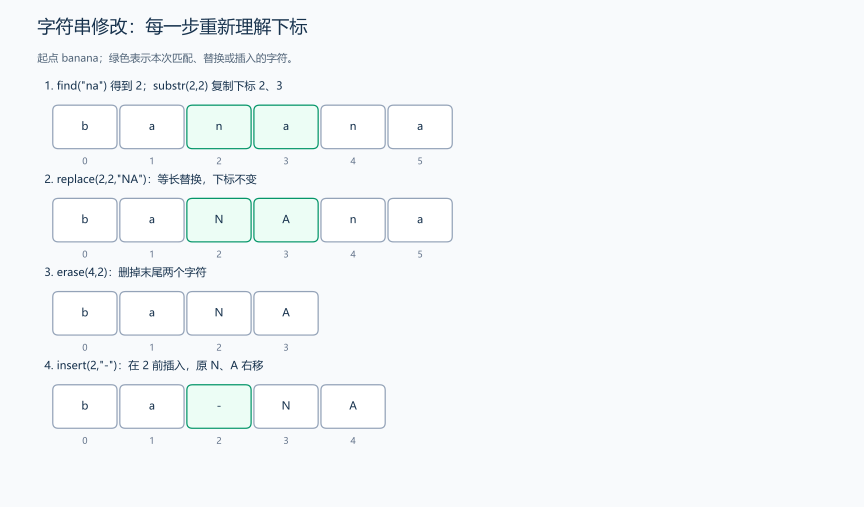
推导： 第一次 na 位于下标 2，substr(2,2) 取的是下标 2、3。替换后为 baNAna；删除位置 4、5 后为 baNA；在 2 前插入横线，后面的 NA 右移，得到 ba-NA。每次修改都会影响后续下标，应按当前字符串解释位置。
#include <iostream>
#include <string>
using namespace std;
int main() {
string s = "banana";
auto pos = s.find("na");
if (pos == string::npos)
return 0; // 未找到时不能拿 npos 当下标。
cout << pos << ' ' << s.substr(pos, 2) << '\n';
s.replace(pos, 2, "NA"); // 第二参数是被替换的长度。
cout << s << '\n';
s.erase(4, 2); // 删除下标 4 开始的两个字符。
cout << s << '\n';
s.insert(2, "-"); // 在当前位置 2 之前插入，后缀整体右移。
cout << s << '\n';
}输出：
2 na
baNAna
baNA
ba-NA查找会扫描字符，截取会复制结果，修改片段可能移动后缀。处理长度不断增长的字符串时，反复向开头插入可能累计到平方量级。字符遍历若需要修改，用 for(char &ch:s)；只读取可用 char ch。
练习题： 洛谷 P5733 — 自动修正；洛谷 P1308 — 统计单词数（进阶，注意完整单词和大小写规则）。
2. vector：连续动态数组
2.1 连续动态数组与初始化
vector<T> 保存同类型元素，头文件为 <vector>。除 vector<bool> 的特殊表示外，元素连续存储，支持 \(O(1)\) 下标访问。长度可在运行时改变，容器负责申请、搬移和释放存储，适合比赛中的数组、序列和邻接表。
begin() 表示第一项的位置，end() 表示最后一项之后的边界；它们是迭代器，*位置 才读取元素。[begin(),end()) 表示整个半开区间，空数组时两个位置相等。对 vector，begin()+k 表示从起点向后移动 k 项；只有已有元素位置才能读取，end 不能读取。下面先用这些位置复制元素，迭代器小节再统一说明它们的操作。
下面是初始化片段；在函数中使用，还需 <vector> 和 using namespace std;。
vector<int> a; // 空数组，没有可以访问的元素。
vector<int> b(3); // 三个已有的 int，值都是 0。
vector<int> c(3, 7); // 三个 7，结果为 [7,7,7]。
vector<int> d{3, 7}; // 两个元素 3、7，花括号是元素列表。
vector<int> e(d.begin(), d.end()); // 复制 d 的整个半开区间。
vector<vector<int>> grid(2, vector<int>(3, 0)); // 2 行，每行 3 个元素。vector<int>(3,7) 与 vector<int>{3,7} 的长度不同。二维 vector 的外层保存行容器，每一行分别保存自己的元素，因此各行可以有不同长度；单行元素连续存储，不同行的元素区则分别管理。拷贝一个含 n 项的 vector 通常需 \(O(n)\) 时间和独立存储；只读参数优先用 const vector<int>&。
2.2 用引用读入运行时长度的数组
现在已经知道 vector(n) 会建立 n 个元素，可以把引用小节的 auto& 输入方式用于它。
题目原文（自拟）： 输入 0<=n<=100000，接着输入 n 个 int 范围内的整数，用 vector 保存，再按输入顺序输出一行，元素间一个空格；n=0 时输出空行。
分析： vector<int> a(n) 先建立 n 个已有元素，初值为 0；输入循环中的 i 类型为 int&，每轮绑定到下一项。cin >> i 会把数据写入这一项。若写成 auto i，虽然也读掉了输入，a 中的元素仍是原来的 0。范围 for 会按已有长度遍历，不会自动增加元素；空的 vector<int> a; 不会进入循环。这里把引用小节在原生数组上的范围 for 用于已经创建的 vector 元素。
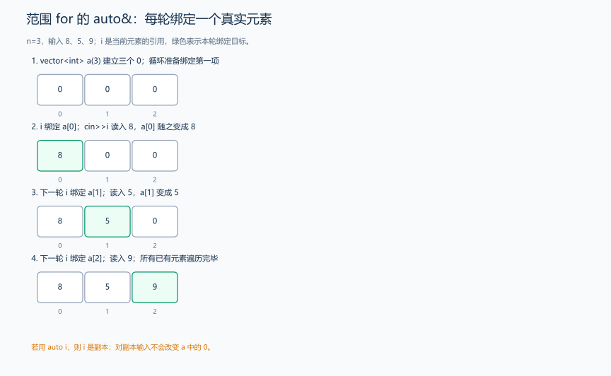
范围 for 的机制与原生数组相同；图以 n=3、输入 8 5 9 为例。绿色位置是本轮 i 的绑定目标：每轮修改一个真实元素，下一轮再绑定到下一项；i 表示值的别名，不表示下标 0、1、2。
#include <iostream>
#include <vector>
using namespace std;
int main() {
int n;
cin >> n;
vector<int> a(n); // 先创建 n 个元素，范围 for 才能遍历它们。
for (auto &i : a) {
cin >> i; // i 是当前元素的引用，输入直接写回 a。
}
bool first = true;
for (const auto &i : a) {
if (!first)
cout << ' ';
cout << i; // 只读取元素，用 const 引用表达只读意图。
first = false;
}
cout << '\n';
}输入：
3
8 5 9输出：
8 5 9两次遍历共 \(O(n)\) 时间，容器占 \(O(n)\) 空间。对较小的 int，只读时按值遍历也很方便；对 string 等较大对象，const auto& 可以避免每轮复制。不要在这个范围 for 里同时 push_back 或 erase，让遍历依赖的位置失效；这些位置失效的规则在本节后面展开。
2.3 size、capacity、reserve 与 resize
size 是已有元素数，capacity 是当前存储可以容纳的元素数。 只有 0…size-1 是已有元素的位置。reserve(k) 请求容量至少为 k，不创建新元素；resize(k,value) 才会改变长度，增长部分填 value，缩小时删去尾部。
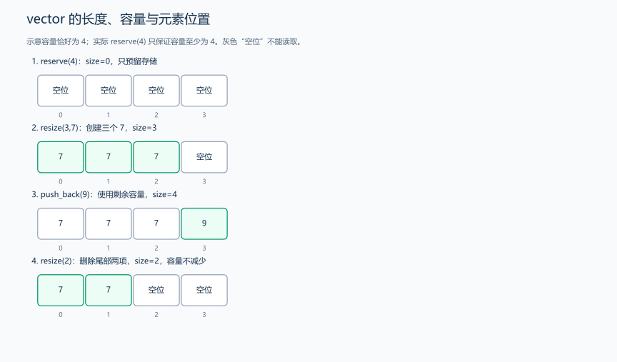
图从空数组开始预留 4 格，size 仍为 0；resize(3,7) 后才有三个 7；追加 9 后有四项；缩到 2 后只剩两个 7。图中的容量用于示意，实际 capacity 可以大于请求值，不能依赖每次扩容都恰好翻倍。
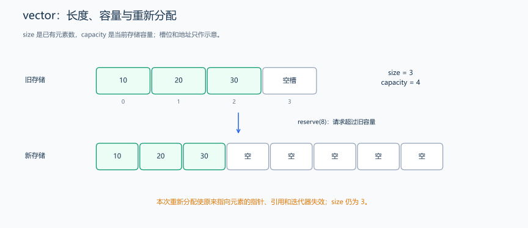
这张图的 reserve(8) 超过旧容量 4，因此发生重新分配。clear() 删除全部元素，但不降低 capacity；shrink_to_fit() 向实现请求缩减容量，实际容量可在调用后用 capacity 查看。容量、长度及重新分配规则见 C++17 草案：vector.capacity。
2.4 vector 常用操作的时间复杂度
以下 n 为当前元素数，元素复制、移动按常数代价估算。
| 操作 | 含义 | 时间复杂度 |
|---|---|---|
v.size()、empty()、v[i]、at(i) |
状态或单项访问 | \(O(1)\)；at 检查越界 |
front()、back() |
访问首尾 | \(O(1)\)，要求非空 |
push_back(x)、emplace_back(args...) |
尾部追加；后者直接构造元素 | 均摊 \(O(1)\)，扩容的一次可为 \(O(n)\) |
pop_back() |
删除最后一项，没有返回值 | \(O(1)\)，要求非空 |
insert(it,x) |
在位置 it 前插入 | 中间通常 \(O(n)\)，需要腾出位置 |
erase(it)、erase(first,last) |
删除一项或一个半开区间 | 中间通常 \(O(n)\)，后缀要左移 |
resize(k)、assign(k,x) |
调整长度、重设内容 | 按实际新增、销毁或赋值数量计算 |
clear() |
删除所有元素 | \(O(n)\)，容量保留 |
swap(other) |
交换两个 vector 的内容与容量 | 默认分配器下 \(O(1)\)，不逐项复制 |
“均摊”看的是一串操作的总费用：多次尾插合计为线性量级，平均每次常数；不是说每一次尾插都固定耗时。若每次都先 reserve(size()+1)，可能破坏正常的增长策略，反复搬移已有元素；知道总量时一次预留即可。
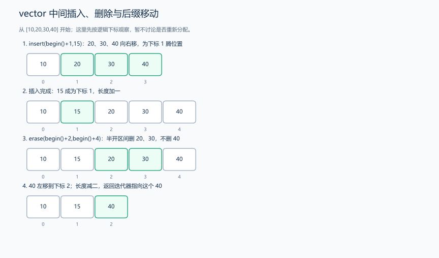
[10,20,30,40] 在下标 1 前插入 15，得到 [10,15,20,30,40]；再删 [2,4)，删掉的是 20、30，40 左移，得到 [10,15,40]。位置参数是迭代器，分别写成 begin()+1 和 begin()+2、begin()+4，不能把元素值当位置。
2.5 完整例题：先压紧，再用区间位置删除尾部
题目原文（自拟）： 第一行输入 0<=n<=100000 和 int 范围内的 x，随后输入 n 个 int。删除所有等于 x 的元素，其余保持输入顺序。输出一行剩余数量，下一行输出剩余元素，以单个空格分隔；没有剩余元素时第二行为空。
分析： 每次删除一项都会搬移后缀，不如先不改变长度，只在数组内部写出保留结果。read 逐项检查原数据，kept 表示已保留的数量，也就是下一次写入位置。遇到 x 跳过；遇到其他值，写入 kept 后将它加一。kept 始终不超过 read，因此只会写到当前或已经读过的位置，不会覆盖未来尚未检查的数据。
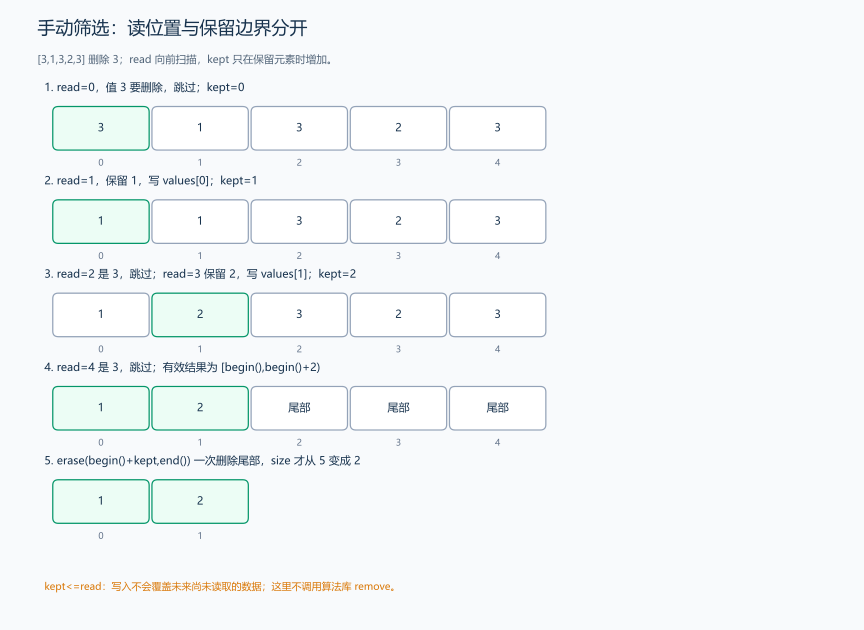
样例 [3,1,3,2,3] 删除 3：跳过下标 0，在读到 1 时写到下标 0，在读到 2 时写到下标 1。扫描结束后 kept=2，结果恰好位于半开区间 [begin(),begin()+2)。此时 size 仍为 5；begin()+kept 是结果之后的边界，用 erase(begin()+kept,end()) 一次删掉尾部，才真正改变长度。这就是迭代器区间的用途：把“保留了几项”转成“要删除哪个区间”。
#include <iostream>
#include <vector>
using namespace std;
int main() {
int n, x;
cin >> n >> x;
vector<int> values(n);
for (int &value : values)
cin >> value; // 引用读入已经创建的元素。
int kept = 0;
for (int read = 0; read < n; ++read) {
if (values[read] != x) {
values[kept] = values[read]; // 只写到当前或已检查的位置。
++kept; // 下一个保留元素将写到这里。
}
}
values.erase(values.begin() + kept, values.end()); // 一次删除无用尾部；空区间也合法。
cout << values.size() << '\n';
for (int i = 0; i < kept; ++i) {
if (i > 0)
cout << ' ';
cout << values[i]; // 只输出有效前缀。
}
cout << '\n';
}输入：
5 3
3 1 3 2 3输出：
2
1 2扫描和一次删除合计 \(O(n)\) 时间，保存输入占 \(O(n)\) 空间，筛选额外用 \(O(1)\)。n=0 时 begin 与 end 相等；全部删除时 kept=0；一个也不删时 kept=n，删除区间为空。算法库小节会在相同过程上解释 remove，先把这次读写想清楚。
2.6 vector 修改与迭代器失效
重新分配会使全部旧迭代器、指针、引用失效；插入未重新分配时，插入点之前的访问仍有效，插入点及之后的旧位置不能继续依赖；erase 会使删除点及之后的迭代器、引用失效。尾插即使没有扩容，旧 end 也不能继续当新 end。需要位置时可以先存下标，修改后重新获取迭代器，但插入删除仍可能改变这个下标代表的元素。见 C++17 草案：vector.modifiers。
vector<bool> 为节省空间可采用位压缩，单项访问可能是代理对象，不能套用普通 bool& 与 bool* 的假设。需要普通布尔标记数组时，比赛中也常用 vector<char>。
2.7 迭代器的用处：把同一个区间交给不同操作
题目原文（自拟）： 程序无需输入。vector 初始为 10、20、30、40、50。复制下标半开区间 [1,3) 到新数组，然后从原数组删除这段区间。依次输出复制结果、原数组剩余结果和删除操作返回位置的元素，各占一行。
推导： begin()+1 指 20，begin()+3 指 40；区间包含 20、30，不包含 40。两个位置既可交给 vector 的区间构造，也可交给 erase。复制得到独立存储，不删除原数据；随后 erase 搬移后缀，旧 first、last 都不能继续使用，应接收它返回的新位置。本例返回指向左移后的 40。
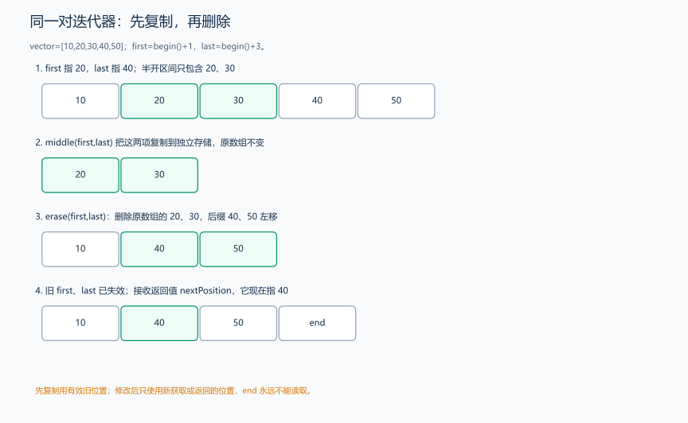
#include <iostream>
#include <vector>
using namespace std;
void print(const vector<int> &values) {
bool first = true;
for (int value : values) {
if (!first)
cout << ' ';
cout << value;
first = false;
}
cout << '\n';
}
int main() {
vector<int> values{10, 20, 30, 40, 50};
auto first = values.begin() + 1;
auto last = values.begin() + 3; // last 是边界，40 不属于 [first,last)。
vector<int> middle(first, last); // 复制到独立数组；values 此时没有改变。
auto nextPosition = values.erase(first, last); // 接收删除后的有效位置。
print(middle);
print(values);
if (nextPosition != values.end())
cout << *nextPosition << '\n'; // 本例输出 40；若返回 end 则不能读取。
}输出：
20 30
10 40 50
40复制 k 项需 \(O(k)\) 时间和独立空间；删除还要搬移后缀，本例操作及输出总计 \(O(n)\) 时间、额外 \(O(k)\) 空间。vector 的 it+k 是常数时间的位置跳转；后面 list 的节点迭代器不能这样跳。删除后，从 erase 的返回位置继续处理即可。
练习题： 洛谷 P1427 — 小鱼的数字游戏（读到题面规定的 0，逆序输出）；洛谷 P5732 — 杨辉三角（二维数组，先推导相邻两项的关系）。
3. pair：成对数据
3.1 pair 的两个字段与构造
pair<A,B> 位于 <utility>，它是一项成对数据，不是容器。first 与 second 可以不同类型，例如 pair<int,string> 保存编号与名字；vector<pair<int,int>> 中的每项可以是坐标。后面的 map 会用这种成对记录保存键和值。
以下是初始化和拆分片段，需 <utility>、<string> 和 using namespace std;。
pair<int, string> a; // int 初始化为 0，string 为空。
pair<int, string> b{2, "banana"}; // 直接给出两个成员。
auto c = make_pair(3, string("pear")); // 根据实参推导两个类型。
auto [id, name] = b; // C++17 结构化绑定得到副本，修改它们不改 b。
auto &[storedId, storedName] = b; // 引用绑定可以写回 b 的对应成员。p.first、p.second 访问成员，swap(p,q) 交换两项。对普通整数或字符串字段，< 按字典序：先比较 first，相同再比较 second；== 要求两个成员都相等。不能说所有比较符号都是“只看第一个字段”。
3.2 完整演示：pair 的字典序比较
题目原文（自拟）： 程序无需输入。建立 a=(2,8)、b=(1,9)、c=(2,3)、d=(1,9)，依次输出 a<b、a<c、b==d 的判断结果，一项一行；false 输出 0，true 输出 1。
推导： a、b 的第一字段不同，2 不小于 1，a<b 为 false，不再比较第二字段。a、c 的第一字段相同，转而比较 8、3，a<c 也为 false。b、d 两个字段都相同，b==d 为 true。把先决字段、下一字段和停止条件拆开，就能读懂字典序。
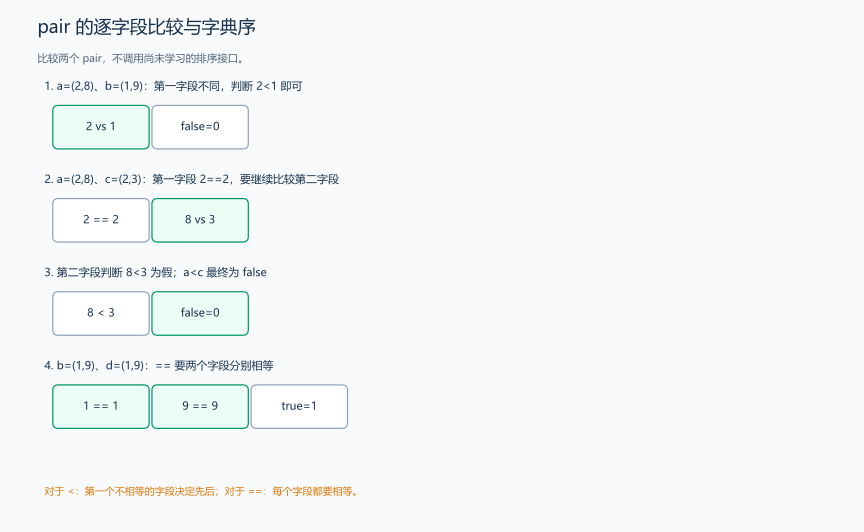
#include <iostream>
#include <utility>
using namespace std;
int main() {
pair<int, int> a{2, 8}, b{1, 9}, c{2, 3}, d{1, 9};
cout << (a < b) << '\n'; // first 不同，由 2<1 直接决定为 false。
cout << (a < c) << '\n'; // first 相同，再判断 second：8<3 为 false。
cout << (b == d) << '\n'; // 两个字段都相同，结果为 true。
}输出：
0
0
1本例字段为 int，每次比较为 \(O(1)\)，额外空间 \(O(1)\)；字符串字段还要计入字符比较代价。算法库会把相同的比较规则用于排序，也会展示怎样指定第一字段降序、第二字段升序。pair 自身没有“去重”动作。
练习题： 洛谷 P1093 — 奖学金（多个排序字段，可以继续学习 tuple 或 struct；按题面完整处理平局）。
4. 迭代器：访问位置与区间
4.1 位置、元素值与半开区间
迭代器表示容器中的一个访问位置，*it 才是该位置的元素；it->first 等价于 (*it).first。begin() 指向第一项，end() 表示尾后位置；空容器中二者相等。end 可以比较、作为区间边界，不能解引用。
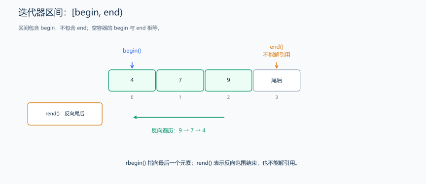
[first,last) 包含 first，不包含 last，遍历条件是 it!=last。反向区间为 [rbegin(),rend())，同样不能读取 rend。反向迭代器的 ++it 是沿反向序列前进，不是沿原下标增大。
4.2 迭代器的移动、比较与距离运算
先用已经学过的 vector 判断：++it 移到下一项，--it 移到上一项，it+k 跳过 k 项，同一 vector 中的合法位置可以相减。begin 不能再向前，end 可以作边界，不能读取它。
<iterator> 提供 next、prev 和 distance；next(it,k) 返回向前移动 k 项后的新位置，prev(it,k) 返回向后移动后的新位置，distance 求区间长度。对 vector，它们可利用随机访问；其他容器的能力会在学完各容器后统一对照。
4.3 值拷贝、引用与只读遍历
下面是函数片段，需 <vector>、<iostream> 和 using namespace std;。
void changeValues(vector<int> &v) {
for (int x : v)
x += 1; // x 是副本，这一句不会修改 v。
for (int &x : v)
x += 1; // 引用指向原元素，每项真正增加 1。
for (auto it = v.cbegin(); it != v.cend(); ++it) {
cout << *it << ' '; // const_iterator 可以读取，不能通过它修改值。
}
}只读遍历大对象常用 const auto&，避免逐项拷贝。对 vector 中的值，const 迭代器只允许读取；它不承诺后续插入或删除后位置仍有效。
4.4 完整演示：遍历中安全删除
题目原文（自拟）： 程序无需输入。用 vector 保存 1、2、3、4，按从前到后的顺序删除偶数，输出剩余元素。删除后还要继续检查紧邻的下一项，不能漏项或使用已删除的位置。
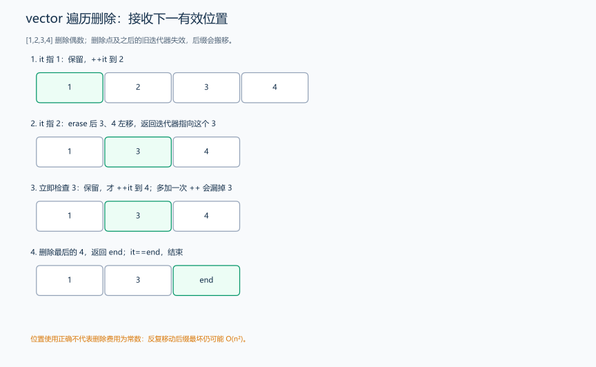
推导： 在 2 处调用 erase 后，这个位置已失效，返回值指向 3。下一轮应直接检查 3；若再多加一次 ++it 就会跳过它。在 4 处删除后返回 end，循环结束。
#include <iostream>
#include <vector>
using namespace std;
int main() {
vector<int> values{1, 2, 3, 4};
for (auto it = values.begin(); it != values.end();) {
if (*it % 2 == 0) {
it = values.erase(it); // 删除时接收下一位置，此分支不再 ++。
} else {
++it; // 保留当前项，才移动到下一位置。
}
}
bool first = true;
for (int value : values) {
if (!first)
cout << ' ';
cout << value;
first = false;
}
cout << '\n';
}输出：
1 3vector 每次删除都可能搬移后缀，逐项删除最坏需要 \(O(n^2)\) 时间。若目标是删掉全部匹配值，手动压紧后统一 erase 可以减少搬移；这里逐项删除，是为了观察返回位置怎样帮助遍历继续。范围 for 会自行维护遍历位置，删除导致位置失效时就难以继续，因此这个过程使用显式迭代器。
练习题： 洛谷 P1059 — 明明的随机数（用迭代器观察排序和压紧后的有效区间，最后统一删除尾部）。
5. <algorithm>：通过迭代器操作区间
5.1 算法处理区间，容器提供位置
STL 算法通常接收迭代器区间，而不是整个容器对象。算法是否可用，要看迭代器能力：本节先在已学的 vector 和 string 上用 sort，它需要随机访问迭代器。后面的链表和关联容器会说明为什么同一接口不能用于所有容器。
| 操作 | 作用 | 条件与复杂度 |
|---|---|---|
min(a,b)、max(a,b) |
返回两项中的较小、较大值 | 同一模板通常要求一致的实参类型；按比较代价计算 |
min({a,b,c})、max({a,b,c}) |
对列表中的多个同类型值取最值 | 花括号提供候选列表，不是数组下标；需非空，按候选数计算 |
sort(first,last) |
排序 | \(O(n\log n)\) 次比较；保留等价项顺序时用 stable_sort |
stable_sort(first,last) |
保留等价项相对顺序的排序 | 足够额外内存时 \(O(n\log n)\) 次比较，否则至多 \(O(n\log^2 n)\) 次比较 |
reverse(first,last) |
原地逆序 | \(O(n)\)，要求双向迭代器 |
find(first,last,x) |
逐项找等于 x 的元素 | 最多 \(O(n)\) 次比较，失败返回 last |
lower_bound(first,last,x) |
在升序区间找首个不小于 x 的位置 | 二分查找，找不到时返回 last |
upper_bound(first,last,x) |
在升序区间找首个大于 x 的位置 | 二分查找，找不到时返回 last |
unique(first,last) |
压紧相邻的重复项 | \(O(n)\)；不改容器长度，不去掉不相邻重复 |
remove(first,last,x) |
压紧不等于 x 的元素 | \(O(n)\)；也需要 erase 才真正缩短序列 |
min_element、max_element |
找最小、最大元素的位置 | \(O(n)\)；空区间返回 last，不可解引用 |
fill(first,last,x) |
把区间里的每项改为 x | \(O(n)\)，逐项赋值 |
求和 accumulate 位于 <numeric>。初值决定累计结果类型，例如整数总和可能很大时用 0LL，不能等计算完溢出的 int 后才转为 long long。
stable_sort 适合要求等价记录保持原先次序的场景，不能默认其额外空间为常数；比较次数与可用内存的关系见 C++17 草案：stable.sort。
5.2 完整例题：去重后统计等值边界
题目原文（自拟）： 输入 0<=n<=100000、int 范围内的查询值 x 和 n 个 int。将数据按升序排序，第一行输出不同值的数量；第二行输出这些不同值。第三行输出 x 在去重数组中的 lower_bound、upper_bound 下标，均从 0 开始；找不到不小于 x 或大于 x 的元素时，对应下标输出数组长度。
分析： 先排序使同值相邻；unique 留下每组第一项，返回新结尾；erase 删尾。lower_bound 和 upper_bound 针对当前去重数组查找，返回的是位置，不是元素值。
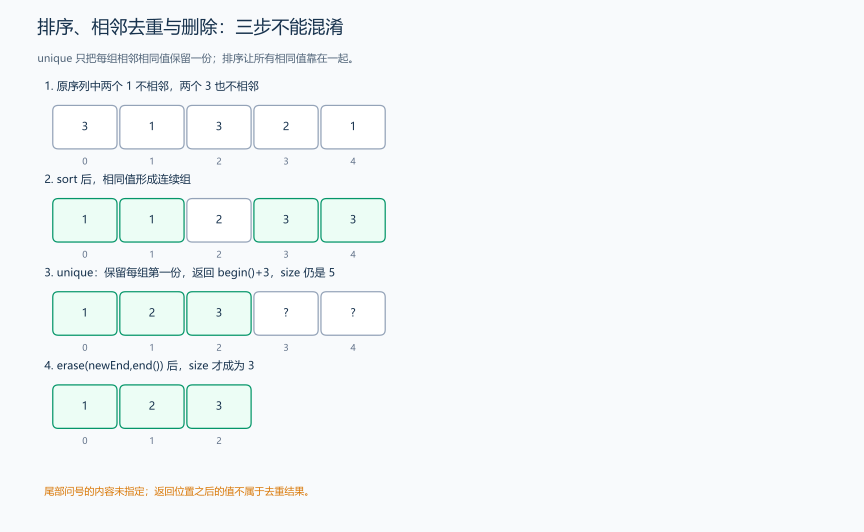
样例排序为 [1,1,2,3,3]，压紧后的有效前缀为 [1,2,3]。查询 2 时，首个不小于 2 在下标 1，首个大于 2 在下标 2。若想统计排序前数据中 2 的出现次数，应在删除重复项之前求上下界差。
#include <algorithm>
#include <iostream>
#include <vector>
using namespace std;
int main() {
int n, x;
cin >> n >> x;
vector<int> values(n);
for (int &value : values)
cin >> value;
sort(values.begin(), values.end()); // unique 之前让相同值聚到一起。
auto newEnd = unique(values.begin(), values.end());
values.erase(newEnd, values.end()); // unique 自身不会减少 size。
cout << values.size() << '\n';
for (int i = 0; i < static_cast<int>(values.size()); ++i) {
if (i > 0)
cout << ' ';
cout << values[i];
}
cout << '\n';
auto left = lower_bound(values.begin(), values.end(), x);
auto right = upper_bound(values.begin(), values.end(), x);
cout << left - values.begin() << ' ' << right - values.begin() << '\n';
}输入：
5 2
3 1 3 2 1输出：
3
1 2 3
1 2排序主导时间 \(O(n\log n)\)，vector 中的每次边界查找为 \(O(\log n)\)。通用边界查找的比较次数可为对数级，但总费用还受迭代器移动能力影响；后面的 set、map 将使用成员查找接口。
5.3 自定义比较规则
对 vector<pair<int,int>> 直接调用 sort(begin,end) 时，会复用 pair 小节的字典序规则：先 first 升序，再 second 升序；重复项仍保留。若希望改变这个规则，再提供比较器。
比较器回答“a 是否排在 b 前面”。同一项不会排在自己前面，所以 comp(a,a) 为 false；<= 在两项相等时返回 true，与这个含义不同。排序和二分查找使用同一个顺序，就能按排序后的次序定位。下面函数使用 <algorithm>、<utility>、<vector>。lambda 参数中的 auto 会按实际元素分别推导；这里 a、b 都是 pair 的只读引用，第一项降序、第二项升序。
void sortRecords(std::vector<std::pair<int, int>> &records) {
std::sort(records.begin(), records.end(), [](const auto &a, const auto &b) {
if (a.first != b.first)
return a.first > b.first; // 第一项降序。
return a.second < b.second; // 相同第一项时，第二项升序。
});
}5.4 从手动压紧到 remove 与 erase
题目原文（自拟）： 第一行输入 0<=n<=100000 和 int 范围内的 x，随后输入 n 个 int。删除所有等于 x 的元素，其余保持输入顺序。输出一行剩余数量，下一行输出剩余元素，以单个空格分隔；没有剩余元素时第二行为空。
分析： vector 小节已经用读、写两个位置完成了同一任务。算法库 remove 封装了这次压紧：用 remove 一次扫描，把保留的元素按顺序压到前面，返回有效前缀的新结尾；再用一次区间 erase 真正缩短数组。
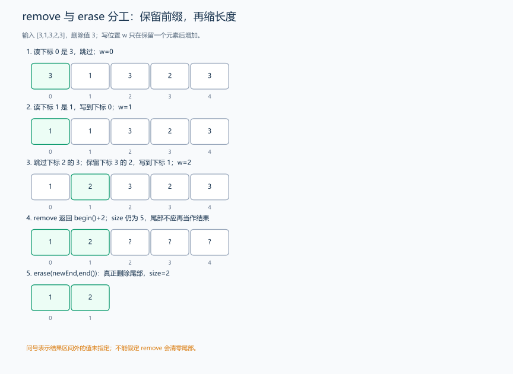
样例 [3,1,3,2,3] 删除 3，保留 1、2。remove 返回下标 2 对应的位置，但此时 size 仍为 5；尾部内容不作为结果，不承诺具体值。erase(newEnd,end()) 后 size 才变为 2。
#include <algorithm>
#include <iostream>
#include <vector>
using namespace std;
int main() {
int n, x;
cin >> n >> x;
vector<int> values(n);
for (int &value : values)
cin >> value; // 引用把输入写回已有元素。
auto newEnd = remove(values.begin(), values.end(), x); // 只压紧，不改 size。
values.erase(newEnd, values.end()); // 删除整个无用尾部；空区间也合法。
cout << values.size() << '\n';
for (int i = 0; i < static_cast<int>(values.size()); ++i) {
if (i > 0)
cout << ' ';
cout << values[i];
}
cout << '\n';
}输入：
5 3
3 1 3 2 3输出：
2
1 2总时间 \(O(n)\)，保存输入占 \(O(n)\) 空间，删除过程额外使用 \(O(1)\)。全部删除、一个也不删、n=0 都由同一段代码处理。
练习题： 洛谷 P1177 — 排序、洛谷 P1059 — 明明的随机数、洛谷 P2249 — 查找（原题找第一次出现且从 1 编号，不能先去重后直接交本节程序）。
6. STL 头文件与包含方式
#include <bits/stdc++.h> 是 GNU libstdc++ 的实现扩展，在提供它的竞赛环境中很方便。通用 C++17 程序也可以按需包含 <vector>、<string>、<algorithm> 等标准头文件。它们只引入声明，不会替你创建容器；using namespace std; 只影响名字查找，也不会导入缺失的头文件。
7. list：双向链表
7.1 list 的节点存储与双向连接
list<T> 是双向链表，头文件为 <list>。每项在节点中保存，节点以连接关系形成顺序，元素不要求物理相邻。找到一个有效迭代器后，前后单项移动、插入或删除都为常数；但从开头找第 k 项要走 k 步。因此“频繁插入删除”还要问：是否已经知道位置。
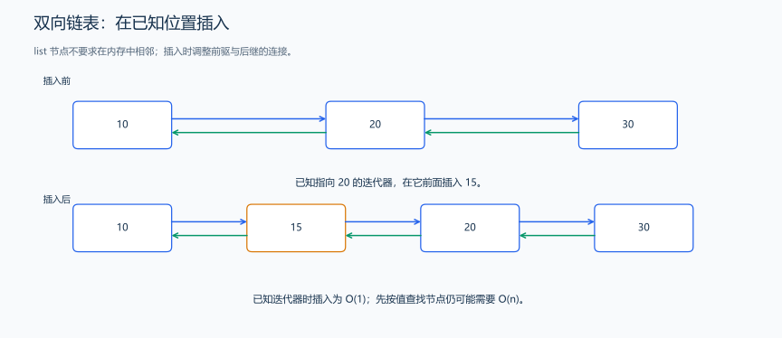
插入只修改邻近连接，其他节点不用整体搬移；节点连接与分配也有额外内存代价。list 没有 []，不能用 begin()+k，也不能调用通用 sort。
7.2 list 的插入、删除与节点移动
| 操作 | 含义 | 时间复杂度 |
|---|---|---|
push_front/back、pop_front/back |
两端插入删除 | 单项 \(O(1)\)；pop 要求非空 |
front()、back()、size()、empty() |
两端或状态访问 | \(O(1)\)；读取两端要求非空 |
insert(it,x) |
在 it 前插入，返回新节点位置 | 已有位置时 \(O(1)\)，it 可以是 end |
erase(it) |
删除该节点，返回下一位置 | \(O(1)\)，it 不能是 end |
remove(x)、remove_if(pred) |
遍历并真正删除匹配项 | \(O(n)\)；不是算法库 remove 的“仅压紧” |
sort() |
成员排序，保留等价项顺序 | \(O(n\log n)\) 次比较 |
unique() |
真正删除相邻重复项 | \(O(n)\)；全部去重通常先 sort |
splice(pos,other,it) |
将 other 中单个节点移到 pos 前 | \(O(1)\)，默认分配器下可直接使用 |
merge(other) 可合并两张按同一规则排好序的 list，节点转移后 other 变空；它不会自动先排序。插入不使其他节点的迭代器、引用失效；删除只使被删节点相关访问失效。单节点 splice 的访问继续指向原节点，只是节点归属改变；其他 splice 重载的复杂度可能不同。见 C++17 草案：list.ops。
7.3 完整演示：定位、插入、删除和移动节点
题目原文（自拟）： 程序无需输入。A 初始为 10、20、30，B 初始为 7、8。在 A 的 20 前插入 15，删除 20，将 B 的第一个节点移到 A 的 30 前，最后分别输出 A、B 的元素，以空格分隔；再用保存的迭代器输出先前插入的 15 与移来的 7，验证它们仍指向原节点。
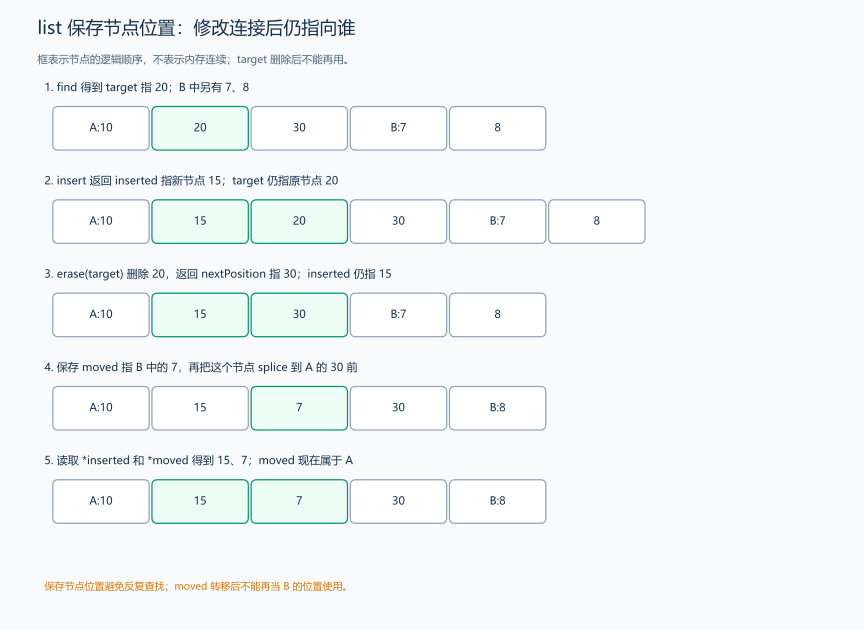
分析： 先用 find 确定 20 的位置；用 inserted 保存 insert 返回的 15 位置，同时原 target 仍指 20；erase 删除 20 后返回 30，改用这个返回位置。用 moved 保存 B 中 7 的位置，再 splice 到 A；moved 仍指同一个 7，但现在属于 A。图中移动的是节点，B 的 7 不再留在源列表。
#include <algorithm>
#include <iostream>
#include <list>
using namespace std;
void print(const list<int> &values) {
bool first = true;
for (int value : values) {
if (!first)
cout << ' ';
cout << value;
first = false;
}
cout << '\n';
}
int main() {
list<int> a{10, 20, 30}, b{7, 8};
auto target = find(a.begin(), a.end(), 20); // 找位置本身要扫描。
if (target == a.end())
return 0;
auto inserted = a.insert(target, 15); // 原 target 仍指向 20。
auto nextPosition = a.erase(target); // target 已失效，改用返回的 30 位置。
auto moved = b.begin(); // 保存 7 的位置，之后不再从头寻找它。
a.splice(nextPosition, b, moved); // 转移一个节点，b 只剩 8。
print(a);
print(b);
cout << *inserted << ' ' << *moved << '\n'; // 15、7 的位置仍有效；target 不再使用。
}输出：
10 15 7 30
8
15 7定位和输出扫描节点，总时间 \(O(n)\)；已知位置的三个修改动作均为常数。保存位置的用处是把“找到节点”与“操作节点”分开：一次定位后，可以在它附近连续插入、删除或转移，不必每次重扫。target 所指节点被删除后，它的位置也随之失效；moved 所指节点转移到了 A，后续遍历从 A 中继续。做大量按值查找时，list 不会因为删除快就自动比 vector 或 map 更合适。
练习题： 洛谷 P1160 — 队列安排（按编号保存位置，可避免每次从头找；删除标记要防止重复删除）。
8. stack：栈
8.1 栈顶、栈底与后进先出
stack<T> 是容器适配器，头文件为 <stack>，默认用 deque 保存数据。适配器为底层容器提供受限接口：栈只允许操作栈顶，不允许下标或普通迭代器遍历。最后放入的元素最先移走，这叫后进先出（LIFO）。
可以把栈想成一叠盘子，栈顶是当前最上方的盘子：每次放入或取走，都在顶部进行。push(x) 把 x 放到顶部，top() 访问顶部，pop() 删除顶部。top 不会删除，pop 不返回值；要保存再删除，先读 top，再 pop。
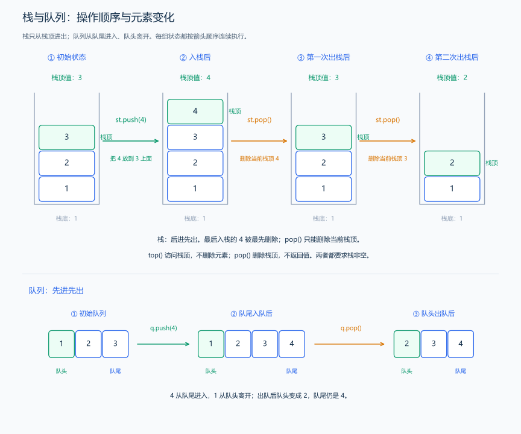
栈的四个状态按顺序执行：初始顶为 3，压入 4 后顶为 4，第一次 pop 删除 4，第二次才删除 3。top 返回引用，非 const 栈可以修改顶部，但其他位置没有直接修改接口。若想遍历并保留栈，可以复制后逐项出栈，复制和扫描需 \(O(n)\)。
| 操作 | 功能 | 默认底层容器下的复杂度 |
|---|---|---|
push(x)、emplace(args...) |
入栈或在顶部构造元素 | \(O(1)\) |
top()、pop() |
读取或删除顶部 | \(O(1)\)，通常配合 empty 判断后使用 |
empty()、size() |
判空、数量 | \(O(1)\) |
8.2 完整例题：按出栈顺序输出
题目原文（自拟）： 输入 0<=n<=100000，随后 n 个 int 范围内的整数；按读入顺序入栈，输出全部出栈值，以单个空格分隔。n=0 时输出空行。
#include <iostream>
#include <stack>
using namespace std;
int main() {
int n;
cin >> n;
stack<int> pending;
for (int i = 0; i < n; ++i) {
int value;
cin >> value;
pending.push(value); // 后读入的数盖在前面的数上。
}
bool first = true;
while (!pending.empty()) {
if (!first)
cout << ' ';
cout << pending.top(); // 先访问，不会删除。
pending.pop(); // 再删除，循环会清空整个栈。
first = false;
}
cout << '\n';
}输入：
5
1 2 3 4 5输出：
5 4 3 2 1每项入栈、出栈各一次，时间与最大存储量均为 \(O(n)\)。默认底层 deque 的尾部操作为常数时间；换成 vector 后，尾插偶尔会扩容并移动已有项，一连串尾插按均摊常数时间计算。
8.3 完整例题：用栈进行括号匹配
题目原文（自拟）： 输入一整行长度不超过 100000 的字符串，只含 (、)、[、]，可以为空。判断是否每个右括号都匹配到最近的未匹配左括号，且最终没有剩余左括号。满足输出 YES，否则输出 NO；空串满足要求。
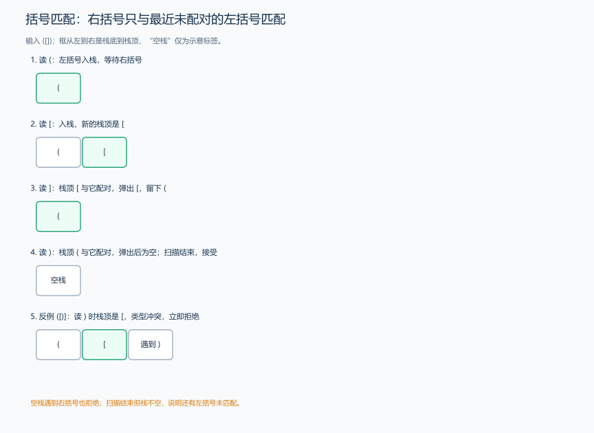
推导： 对 ([])，先压入左圆括号，再压入左方括号；读到右方括号时，栈顶恰好是左方括号，配对后弹出。接着读到右圆括号，栈顶已恢复为左圆括号，也能配对。对 ([)]，读到右圆括号时栈顶却是左方括号，配对失败。栈中一直按出现顺序保存尚未匹配的左括号，最新的一项就在顶部。
#include <iostream>
#include <stack>
#include <string>
using namespace std;
bool balanced(const string &text) {
stack<char> pending;
for (char ch : text) {
if (ch == '(' || ch == '[') {
pending.push(ch); // 新的左括号比之前的更晚，应优先匹配。
} else {
if (pending.empty())
return false; // 没有左括号，不能读 top。
char expected = ch == ')' ? '(' : '[';
if (pending.top() != expected)
return false;
pending.pop(); // 当前一对匹配完，恢复外层的待匹配状态。
}
}
return pending.empty(); // 剩下的左括号没有右括号与它们匹配。
}
int main() {
string text;
getline(cin, text); // 一整行输入，允许空串。
cout << (balanced(text) ? "YES" : "NO") << '\n';
}输入：
([])输出：
YES先配对内层 []，再配对外层 ()；输入 ([)]、]、(( 都输出 NO。总时间 \(O(n)\)，最多 n 个未匹配左括号，额外空间 \(O(n)\)。题目输入由这三种括号组成，每个字符都参与配对。
练习题： 洛谷 P1449 — 后缀表达式（遇运算符取栈顶两个操作数，注意减除的左右顺序）；洛谷 P1241 — 括号序列（进阶，原题还需给未配对括号补字符）。
9. queue：队列
9.1 队头、队尾与先进先出
queue<T> 位于 <queue>，也是容器适配器，默认底层为 deque。队尾接收新元素，队头移走最早进入的元素，这叫先进先出（FIFO）。它适合等待处理的任务和 BFS 的待扩展顶点。
push(x) 在尾部加 x；front()、back() 分别访问两端；pop() 删除队头，不返回值。这三种访问或删除要求队列非空。队列不提供 []、迭代器或任意删除；遍历出队会清空内容，想保留时先复制。默认底层下，以上操作与 size、empty 均为 \(O(1)\)。
在前面栈与队列的图中，队列从 [1,2,3] 追加 4 后为 [1,2,3,4]，pop 删除 1，变成 [2,3,4]。队列中的先后取决于进入次序，与元素数值大小无关。
9.2 完整例题：循环报数出队
题目原文（自拟）： 输入 1<=n<=100、1<=m<=1000。编号 1…n 的人按顺序围成一圈，从队头开始报数；前 m-1 人各移动到队尾，第 m 人出圈，下一人重新从 1 报数。输出所有出圈编号，以单个空格分隔，直到队列为空。
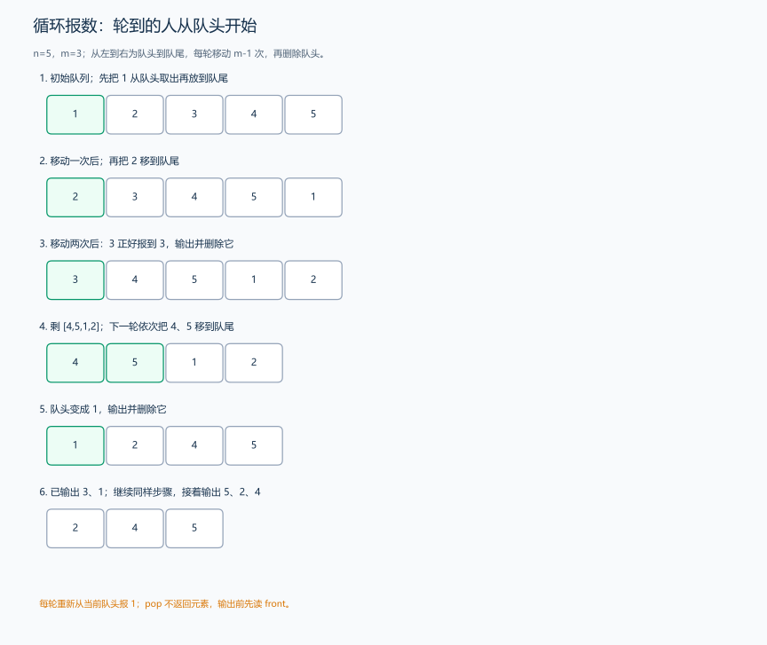
分析： n=5、m=3 时，先将 1、2 依次移到尾部，队列为 [3,4,5,1,2]，删除 3；接着将 4、5 移到尾部，删除 1。队头始终就是下一轮报数的起点，不需要真的把末尾指向开头。
#include <iostream>
#include <queue>
using namespace std;
int main() {
int n, m;
cin >> n >> m;
queue<int> pending;
for (int id = 1; id <= n; ++id)
pending.push(id);
bool first = true;
while (!pending.empty()) {
for (int count = 1; count < m; ++count) {
int id = pending.front(); // 先保存，pop 后不能依赖旧引用。
pending.pop();
pending.push(id); // 没有出圈，只移动到尾部。
}
if (!first)
cout << ' ';
cout << pending.front(); // 当前是报到 m 的人。
pending.pop();
first = false;
}
cout << '\n';
}输入：
5 3输出：
3 1 5 2 4每轮删一人，执行 m-1 次轮转，总时间 \(O(nm)\)，队列空间 \(O(n)\)。m=1 时不轮转，按原编号输出。m 特别大时这种逐次模拟就不够快，需要结合剩余人数取模或其他推导。
| 结构 | 下一个被处理的元素 | 典型用途 |
|---|---|---|
| stack | 最近进入者 | 括号匹配、递归的待返回状态 |
| queue | 最早进入者 | 分层搜索、按到达次序处理任务 |
| priority_queue | 当前比较规则下最优先者 | 最值调度、堆与最短路 |
练习题： 洛谷 P1996 — 约瑟夫问题、洛谷 P1540 — 机器翻译（先进先出的缓存淘汰，另需判断是否已缓存）。
10. map：有序键值映射
10.1 键、值与有序查找
map<Key,Value> 位于 <map>。每个键对应一个值，键按比较器有序且唯一；默认从小到大遍历键。可以把它想成“用名字查记录”的表，键用于定位，值保存统计结果或其他信息。常见实现使用平衡搜索树，让按键查找、插入和删除保持对数复杂度。
“键唯一”按比较规则判断：若 comp(a,b)、comp(b,a) 都为 false，说明两者在这个顺序中等价，map 将它们视为同一键。查询、按键插入删除和成员边界查找通常为 \(O(\log n)\) 次比较；字符串键还要计入一次比较的字符代价。
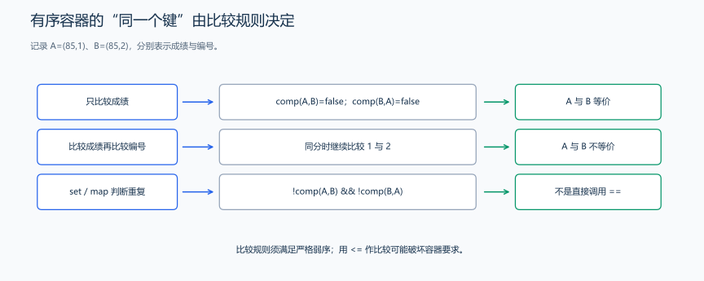
图中只比较成绩时，同分的两条记录等价；加入编号的第二关键字，才能保存两条同分但不同编号的记录。这不仅影响排序，还影响“重复键”的判定。
10.2 查询与写入的区别
| 操作 | 返回或效果 | 关键区别 |
|---|---|---|
mp.find(key) |
指向该键的迭代器，失败返回 end | 不创建缺失键 |
mp.count(key) |
0 或 1 | 判断键存在，不是读取 value 中的频次 |
mp.at(key) |
已存在键的值引用 | 缺失抛 out_of_range，不插入 |
mp[key] |
值引用；缺失时先创建默认值 | int 初值为 0，string 初值为空 |
mp.insert({key,value})、emplace(key,value) |
(迭代器,是否插入) |
等价键已存在则不覆盖旧值 |
mp.insert_or_assign(key,value) |
C++17：插入或更新 | 有键也会覆盖 value |
mp.try_emplace(key,args...) |
C++17：仅缺失时构造 value | 已存在时保留 value |
mp.erase(key) |
删除数，map 为 0 或 1 | 删除键，而不是删除第 key 项 |
mp.erase(it) |
删除迭代器所指项，返回下一位置 | 单位置删除为均摊常数 |
lower_bound、upper_bound |
按键找边界 | 默认首个 >=key、>key，不要求 key 已存在 |
size()、empty()、clear() |
数量、判空、清空 | 前两者 \(O(1)\)，clear 为 \(O(n)\) |
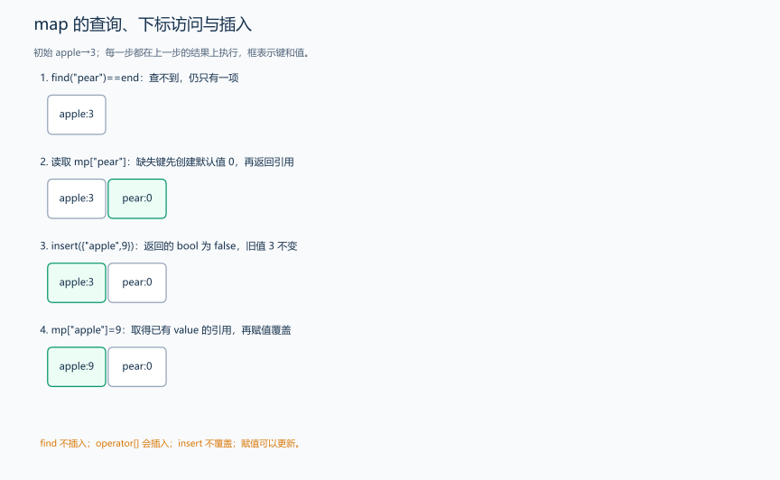
已有 apple→3 时，find("pear") 失败但大小仍为 1；读取 mp["pear"] 会建立 pear→0，大小变成 2；insert({"apple",9}) 不改旧 3，mp["apple"]=9 才会更新。只想问是否存在时，不要用下标读取，尤其不能用 mp[key]!=0 代替“存在”：合法值可能就是 0。下标语义见 C++17 草案：map.access。
10.3 完整例题：统计后查询单词次数
题目原文（自拟）： 第一行输入 0<=n,q<=100000。接着 n 个长度 1…20 的小写英文单词，然后 q 个查询单词。先按字典序输出每个不同单词及出现次数，一项一行；再依查询顺序输出次数，未出现输出 0。查询不能创建新的单词记录。
分析： 统计时 ++frequency[word] 正好需要“缺失时从 0 开始”；查询时用 find，成功读 second，失败直接输出 0。遍历中 first 是单词，second 是累计次数，count(word) 只有 0、1，不能代替次数。
#include <iostream>
#include <map>
#include <string>
using namespace std;
int main() {
int n, q;
cin >> n >> q;
map<string, int> frequency;
for (int i = 0; i < n; ++i) {
string word;
cin >> word;
++frequency[word]; // 缺失单词创建为 0，再加到 1。
}
for (const auto &[word, times] : frequency) {
cout << word << ' ' << times << '\n'; // 按键字典序，不是出现先后。
}
while (q--) {
string word;
cin >> word;
auto it = frequency.find(word);
cout << (it == frequency.end() ? 0 : it->second) << '\n'; // 查询不插入。
}
}输入：
5 2
pear apple pear banana apple
apple orange输出：
apple 2
banana 1
pear 2
2
0设 u 为不同单词数，长度上限固定时，总时间 \(O((n+q)\log(u+1)+u)\)，存储 \(O(u)\) 条记录。插入不使已有元素的迭代器、引用失效，删除只使被删项相关访问失效；不能通过迭代器改 first。需要修改值时可用 auto &[key,value]；auto [key,value] 是拷贝，改它不会写回。
10.4 迭代器的用处：定位一次，修改值或沿有序区间前进
题目原文（自拟）： 程序无需输入。map 中已有 10→2、20→3、30→4、40→5。找到键 20，将它的值加 7；输出键位于闭区间 [15,35] 内的记录，每项占一行。随后从这一区间中删除值为偶数的记录，再输出全部剩余记录；两个阶段之间输出一行 --。
分析： find 返回的不只是“找到了”，还是这个键值记录的位置，因此可直接修改 it->second，不用再次查找。键 first 参与有序组织，不能通过迭代器改它。lower_bound(15) 返回首个不小于 15 的键 20；upper_bound(35) 返回首个大于 35 的键 40。于是题意的闭区间 [15,35] 转成容器的半开迭代器区间 [first,last)，恰好覆盖 20、30。
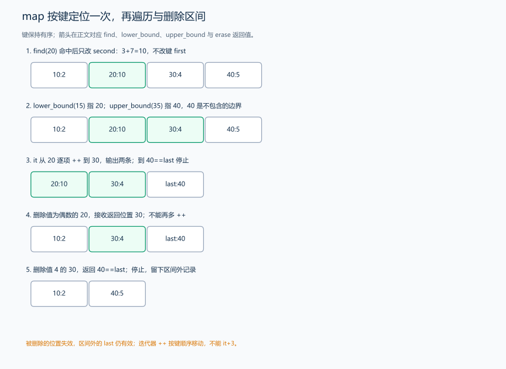
继续删除怎样避免漏项？ 20 的值由 3 变成 10，是偶数；erase 返回 30，下一轮立即检查 30，再删除其值 4，返回 40。此时 it==last，停止。last 指向不在删除范围内的 40，因此这些删除不会使它失效；如果区间延伸到末尾，last=end 也作为有效边界。空区间则从开始就满足 first==last，不进入循环。
#include <iostream>
#include <map>
using namespace std;
int main() {
map<int, int> records{{10, 2}, {20, 3}, {30, 4}, {40, 5}};
auto found = records.find(20);
if (found != records.end())
found->second += 7; // 修改已有值，不再使用下标二次查找；first 不能改。
auto first = records.lower_bound(15); // 首个键 >=15，即 20。
auto last = records.upper_bound(35); // 首个键 >35，即 40；40 不在区间中。
for (auto it = first; it != last; ++it)
cout << it->first << ' ' << it->second << '\n'; // ++ 按键顺序到下一条。
cout << "--\n";
for (auto it = first; it != last;) {
if (it->second % 2 == 0)
it = records.erase(it); // 当前位置已失效，接收下一位置，不再 ++。
else
++it; // 只在保留当前项时前进。
}
for (const auto &[key, value] : records)
cout << key << ' ' << value << '\n'; // 输出未删除的 10、40。
}输出：
20 10
30 4
--
10 2
40 5设总记录数 n、选中记录数 k，find 和两次成员边界查找合计 \(O(\log n)\)，区间遍历与按位置删除合计 \(O(k)\)；最后输出全部剩余记录至多还要 \(O(n)\)，所以本程序总时间 \(O(n+\log n)\)，存储 \(O(n)\)、额外 \(O(1)\)。一般边界查询加区间处理为 \(O(\log n+k)\)，不能把访问 k 项也算成常数。map 迭代器支持 ++、–，没有 it+3；移动三项需三次前进，不能通过两位置相减求数量。边界与失效规则见 C++17 草案：关联容器要求。
练习题： CF 4C — Registration System、洛谷 P5266 — 学籍管理。
11. set：有序键集合
11.1 有序、不重复的键集合
set<T> 位于 <set>，只保存键，没有另外的 value。插入等价键时保留一项；默认升序遍历，*it 读取键。它适合动态去重、存在性查询和有序的前驱后继查找。与 map 一样，唯一性由严格弱序比较器决定，常见实现为平衡搜索树。
set<int,greater<int>> 按降序组织键，需要 <functional>。边界查找也随比较器改变，此时 lower_bound(x) 找首个“不排在 x 前”的键，即数值 <=x，不能继续解释为 >=x。
11.2 set 的插入、删除与定位
| 操作 | 功能 | 时间复杂度 |
|---|---|---|
insert(x) |
返回 (位置,是否新插入) |
\(O(\log n)\) |
find(x)、count(x) |
查存在；count 为 0 或 1 | \(O(\log n)\) |
erase(x) |
删除等价键，返回 0 或 1 | \(O(\log n)\) |
erase(it) |
删除一个有效位置，返回下一位置 | 均摊 \(O(1)\) |
lower_bound(x)、upper_bound(x) |
按比较规则找边界 | \(O(\log n)\) |
begin()、rbegin() |
默认升序下定位最小、最大 | \(O(1)\)，empty 可判断是否有元素 |
size()、empty()、clear() |
数量、判空、清空 | 前两者 \(O(1)\)，clear 为 \(O(n)\) |
set 没有下标，无法直接读“第 k 小”。advance(it,k) 会移动 k 次，反复用它查询排名可能很慢。要删除默认升序下闭区间 [L,R]，L<=R 时可用 erase(lower_bound(L),upper_bound(R))；用 find(L) 当左端会要求 L 恰好存在，若返回 end 而右端在前面，还可能构成非法区间。
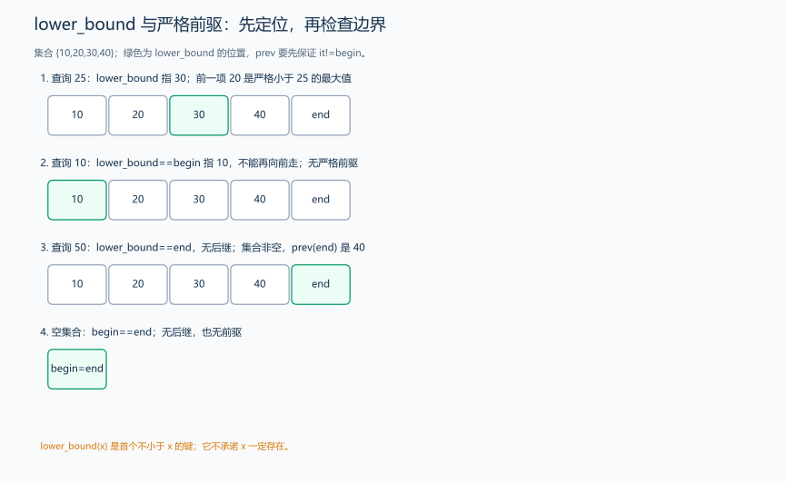
11.3 完整例题：严格前驱与不小于查询值的后继
题目原文（自拟）： 第一行输入 0<=n,q<=100000，接着 n 个 int，再接着 q 个 int 查询。将数据作为升序去重集合；每次输出“小于 x 的最大值”和“不小于 x 的最小值”，中间一个空格。某侧不存在时输出 NA。查询不修改集合。
推导： lower_bound(x) 就是不小于 x 的首项；若它不是 begin，前一个位置便是严格前驱。x 比所有值大时 lower_bound 返回 end，仍可在非空集合中向前一步取最大值；空集合中 begin=end，两侧都不存在。
#include <iostream>
#include <iterator>
#include <set>
using namespace std;
int main() {
int n, q;
cin >> n >> q;
set<int> values;
for (int i = 0; i < n; ++i) {
int value;
cin >> value;
values.insert(value); // 重复输入只保存一次。
}
while (q--) {
int x;
cin >> x;
auto it = values.lower_bound(x);
if (it == values.begin())
cout << "NA";
else
cout << *prev(it); // end 可向前一步，但 begin 不能再向前。
cout << ' ';
if (it == values.end())
cout << "NA";
else
cout << *it; // end 只作边界，不能解引用。
cout << '\n';
}
}输入：
4 3
10 20 30 40
25 10 50输出：
20 30
NA 10
40 NA建集合与查询共 \(O((n+q)\log(u+1))\)，u 为不同值数，空间 \(O(u)\)。插入保留已有迭代器，删除只使被删项失效；通过迭代器直接改键会破坏排序，因此接口不允许这样写。
11.4 自定义记录的排序与唯一性
下面是类型片段，需 <set>、<string>。比较顺序为成绩降序、姓名升序、年龄升序；三项都等价时视为同一记录。struct 中的 operator() 定义“把对象当函数调用”时执行的操作，例如 StudentLess compare; compare(a,b);。末尾 const 表示比较不修改比较器对象；同一个元素的各字段都相等，因此与自身比较返回 false。
struct Student {
std::string name;
int age;
double score;
};
struct StudentLess {
bool operator()(const Student &a, const Student &b) const {
if (a.score != b.score)
return a.score > b.score; // 成绩不同时按降序比较；相同时继续比较后面的字段。
if (a.name != b.name)
return a.name < b.name;
return a.age < b.age; // 继续比较第三字段，满足严格弱序。
}
};在函数中用 std::set<Student,StudentLess> students; 创建容器，再用 students.insert({"Alice",18,90.0}); 插入记录。插入同分的 Bob 会保留，两次插入完全相同的 Alice 则只留一项。若希望同名同龄同分的两条记录也能共存，改用 multiset，或给每条记录增加独立编号。保存“名字→成绩”通常用 map；只保存唯一的名字用 set；保存全部学生再统一排序通常用 vector，按需求选结构。
练习题： 洛谷 P1059 — 明明的随机数、洛谷 P2234 — 营业额统计（进阶，边插入边找邻近值）。
12. unordered_map：哈希键值映射
12.1 哈希先定位桶，再比较键
unordered_map<Key,Value> 位于 <unordered_map>，保存唯一键到值的映射，按哈希值组织桶，遍历时依次访问桶中的元素。查找先由 hash 定位候选桶，再用键相等规则核对实际键；不同键可以发生哈希冲突，哈希值相等不等于键相等。
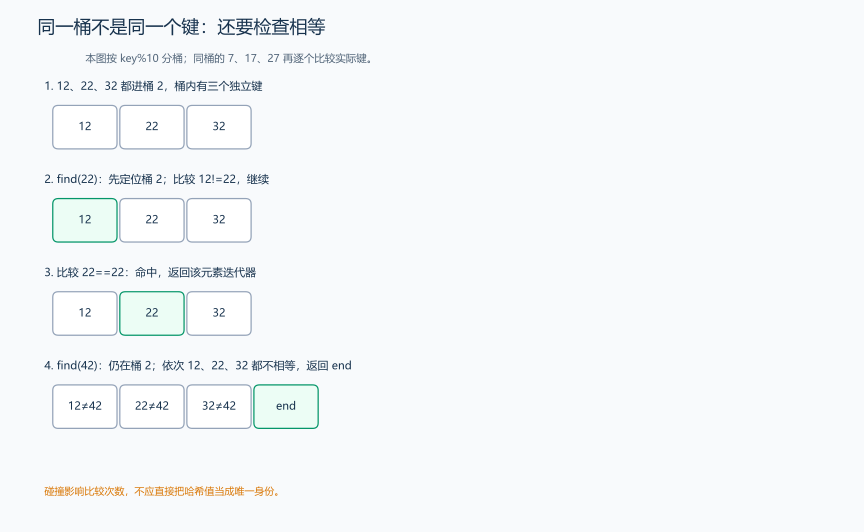
图用教学哈希 h(x)=x、桶下标 h(x)%10 说明冲突，12、22、32 同在桶 2；查 22 时比较 12 失败、22 成功，查 42 要检查全部候选。标准库不承诺采用取模 10 或这组实际桶编号。
查找、单项插入和按键删除平均为 \(O(1)\)，最坏可为 \(O(n)\)，还需计入哈希和比较键的代价。它适合不依赖键顺序的统计与查询；没有 lower_bound、upper_bound，也不能从 begin 得到数值最小键。
12.2 下标、负载与访问失效
find、count、at、下标、insert、emplace、insert_or_assign、try_emplace 的“查询、默认插入、是否覆盖”含义与 map 相同，只是组织方式和复杂度不同。清空为 \(O(n)\)，size、empty 为常数。
load_factor() 为元素数除以桶数；max_load_factor(x) 设负载上限，reserve(k) 按预计元素数安排桶，rehash(b) 请求桶数。它们不会创建 k 个键值对，也不能保证消除冲突。已知要插入很多记录时，可先设负载上限，再 reserve，减少增长过程中的重建。
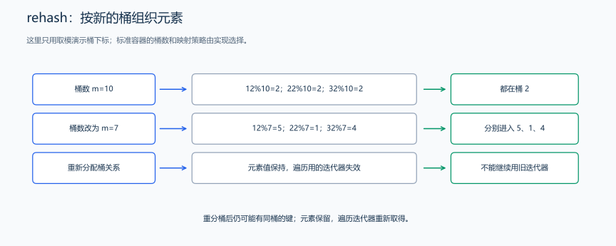
发生 rehash 会使旧迭代器失效，但指向已有元素的引用、指针仍有效；删除只使被删项相关访问失效。插入若触发 rehash，就不能继续使用保存的旧迭代器。见 C++17 草案：无序关联容器要求。不要在遍历中不断插入新键，又默认旧迭代器一直有效。
12.3 完整例题：按查询顺序输出频次
题目原文（自拟）： 第一行输入 0<=n,q<=100000，接着 n 个 int，再接着 q 个 int 查询。每次输出这个数在前 n 项中的出现次数，没有则输出 0。只需按查询顺序输出，不要求遍历键或按键排序。
分析： 统计使用下标累加，查询使用 find。输出次序由输入查询决定，不依赖哈希容器遍历，因此答案稳定。reserve 只是容量规划，n=0 时表仍为空。
#include <iostream>
#include <unordered_map>
using namespace std;
int main() {
int n, q;
cin >> n >> q;
unordered_map<int, int> frequency;
frequency.max_load_factor(0.7f); // 先设置负载，再按预计元素数预留桶。
frequency.reserve(n);
for (int i = 0; i < n; ++i) {
int value;
cin >> value;
++frequency[value]; // 已存在则累加，不存在从 0 起。
}
while (q--) {
int value;
cin >> value;
auto it = frequency.find(value);
cout << (it == frequency.end() ? 0 : it->second) << '\n';
}
}输入：
5 3
3 1 3 2 1
3 9 1输出：
2
0
2整数键下，平均总时间 \(O(n+q)\)，若冲突集中，最坏可能退化到 \(O((n+q)(u+1))\)，u 是不同键数。存储计入元素与桶；代码按 n 预留，空间上界 \(O(n+1)\)。需要有序邻近查询、稳定的对数查找界或有序输出时，应考虑 map，不能只按“哈希一定更快”选择。
练习题： 洛谷 P5266 — 学籍管理（可以分别用 map 与 unordered_map 比较）；CF 4C — Registration System。
13. unordered_set：哈希键集合
13.1 unordered_set 的存在性查询
unordered_set<T> 位于 <unordered_set>，只保存唯一键，没有关联 value。insert 返回 (位置,是否新插入)，find 失败返回 end，count 为 0 或 1。平均单项插入、查找、按键删除为 \(O(1)\)，最坏 \(O(n)\)。需要统计次数时用 unordered_map，不能把集合的 count 当输入中的重复次数。
哈希集合按桶组织元素，遍历次序通常与输入顺序、数值大小都不同。它适合维护“已经见过哪些值”；若还需要首次出现顺序，可以把新值同时记入 vector。reserve、rehash 和访问失效规则与上一节一致。
13.2 完整例题：按首次出现顺序去重
题目原文（自拟）： 输入 0<=n<=100000 和 n 个 int，按第一次出现的先后输出各个不同值，中间单个空格。n=0 时输出空行。不能按数值排序。
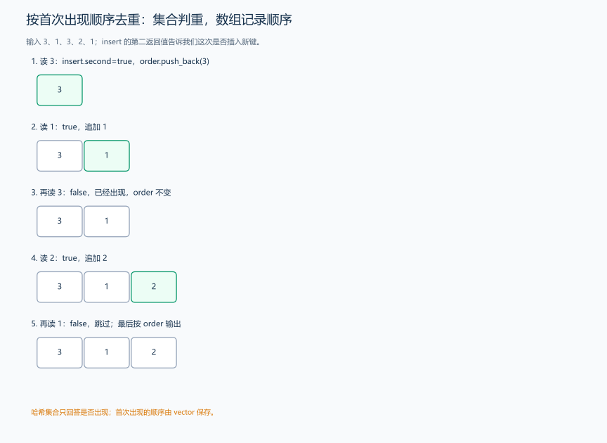
推导： [3,1,3,2,1] 的插入结果依次为成功、成功、重复、成功、重复；只有成功时追加到输出 vector，所以输出为 3 1 2。哈希集合用于判重，vector 用于保存题面要求的顺序。
#include <iostream>
#include <unordered_set>
#include <vector>
using namespace std;
int main() {
int n;
cin >> n;
unordered_set<int> seen;
seen.reserve(n);
vector<int> order;
for (int i = 0; i < n; ++i) {
int value;
cin >> value;
auto [it, inserted] = seen.insert(value);
if (inserted)
order.push_back(value); // 重复键不改变首次出现的顺序。
}
for (int i = 0; i < static_cast<int>(order.size()); ++i) {
if (i > 0)
cout << ' ';
cout << order[i]; // 这里遍历有序记录，不是遍历 seen。
}
cout << '\n';
}输入：
5
3 1 3 2 1输出：
3 1 2保留的是首次出现顺序，不是数值顺序。平均时间 \(O(n)\)，最坏可能 \(O(n^2)\)，预留桶、判重集合和输出序列合计 \(O(n)\) 空间。
13.3 自定义类型的相等与哈希要一致
例如学生按编号 id 判重，名字仅是附加信息。下面是类型片段，需 <string>、<functional>、<unordered_set>、<cstddef>。operator== 定义 Student 之间的相等判断。std::hash<int>{} 创建整数哈希函数对象，再用 (student.id) 调用它；返回的 std::size_t 是表示大小的无符号整数类型，声明由 <cstddef> 提供。
struct Student {
std::string name;
int id;
bool operator==(const Student &other) const {
return id == other.id; // 同一编号就是同一键，即使名字不同。
}
};
struct StudentHash {
std::size_t operator()(const Student &student) const {
return std::hash<int>{}(student.id); // 按用于判等的学号计算哈希值。
}
};在函数中创建 std::unordered_set<Student,StudentHash> students;，依次用 insert 插入 {"Alice",1}、{"Bob",2}、{"Ann",1} 后只有两个键，编号 1 保留先插入的 Alice，不会自动换成 Ann。若 equality 只比较 id，hash 却还依赖 name，同 id 不同名可能被分到不同桶，破坏容器要求；相反，不同键得到相同 hash 是允许的，交给相等比较继续区分。
set 判断唯一性靠比较器的等价关系，unordered_set 靠相等规则；两者都不允许通过迭代器随意改键。只需判存在选集合，要携带并修改附加数据选映射，要重复保存同键选 multi 版本。
练习题： 洛谷 P3370 — 字符串哈希（可先用 unordered_set<string> 按完整字符串判重，再学习自行哈希时的碰撞问题）；洛谷 P1059 — 明明的随机数（原题需排序，判重后还要 sort，不能直接输出哈希遍历结果）。
14. priority_queue：优先队列
14.1 从堆顶读取优先级最高的一项
priority_queue<T,Container,Compare> 位于 <queue>，默认底层为 vector<T>、比较器为 less<T>。默认堆顶是最大值；取出后重新调整，保证下一次 top 仍是当前最大。底层序列只保持堆序，不能当成完整排序数组，也没有普通迭代器接口。
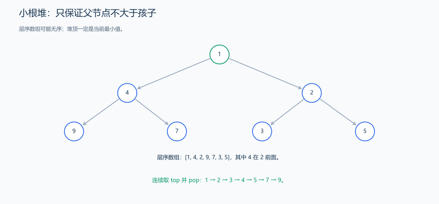
本图使用小根堆解释结构，[1,4,2,9,7,3,5] 中 4 在 2 前面也合法；只有根 1 保证是最小值。从 0 编号时，父位置为 (i-1)/2，孩子为 2i+1、2i+2。这描述常见二叉堆实现，不承诺标准库内部采用某个固定数组布局。
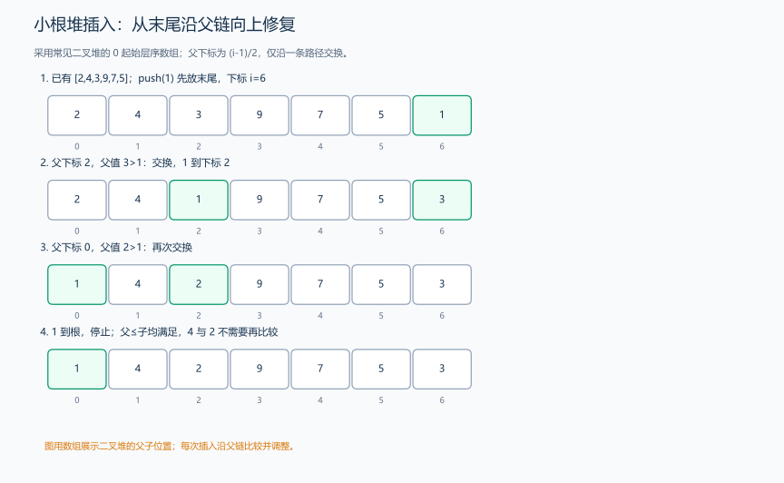
对小根堆 [2,4,3,9,7,5] 追加 1，先与父值 3 交换，再与根 2 交换，得到 [1,4,2,9,7,5,3]。只沿祖先链移动，层数为 \(O(\log n)\)。
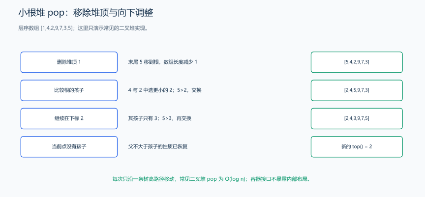
从 [1,4,2,9,7,3,5] 删除根 1，末尾 5 补到根；先选较小孩子 2 交换，再与 3 交换，得到 [2,4,3,9,7,5]。选择错误孩子可能仍违反堆序，所以不能随便向一边下移。
| 操作 | 含义 | 默认 vector 底层下的费用 |
|---|---|---|
top() |
当前最优先元素的 const 引用 | \(O(1)\)；配合 empty 判断后读取 |
push(x)、emplace(args...) |
插入后向上调整 | \(O(\log n)\) 次堆比较；单次扩容还可能搬移 \(O(n)\) 项 |
pop() |
删除当前堆顶，不返回值 | \(O(\log n)\)，要求非空 |
size()、empty() |
数量、判空 | \(O(1)\) |
若要改变已有任务的优先级，标准接口没有直接定位修改的操作；可另存最新状态，插入新记录，取出过期记录时跳过，Dijkstra 章节就使用这个思路。不能修改比较器所依赖的外部状态，又默认旧堆已经自动重排。
14.2 大根堆、小根堆与比较器
<functional> 的 lessless<int>{}(a,b) 判断 a<b，greater<int>{}(a,b) 判断 a>b。第三个模板参数填写比较器类型，容器创建后用它进行比较。以下是定义片段，需要 <queue>、<vector>、<functional>。
std::priority_queue<int> maxHeap; // less<int>，较大值优先。
std::priority_queue<int, std::vector<int>, std::greater<int>> minHeap; // 较小值优先。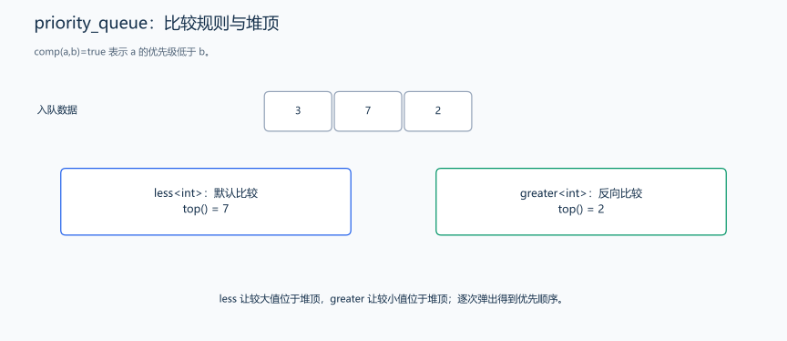
对整数，less 使最大值在 top，greater 使最小值在 top。理解自定义规则时，可问“a 是否比 b 更晚处理”；它与 sort 中“a 排在 b 前面”的使用直觉不同。比较器按同一个先后关系安排元素，堆才能持续找到优先级最高的一项。接口与默认底层见 C++17 草案：priority.queue。
14.3 完整例题：优先级与平局顺序
题目原文（自拟）： 输入 0<=n<=100000，随后 n 行各含唯一编号 id 和 int 范围内的优先级 priority。按优先级从大到小取出；同优先级先取编号较小者。每次输出一行 id，直至全部取完。
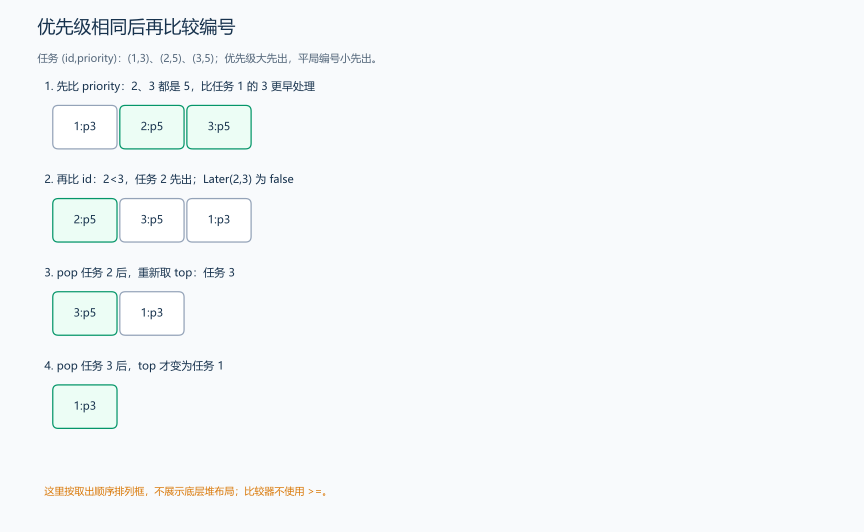
分析： a 优先级更小时应更晚；优先级相同时，a 编号更大也应更晚。样例任务 (1,3)、(2,5)、(3,5) 依次取 2、3、1，不能只按 priority 比较后期望自动按编号稳定排序。
#include <iostream>
#include <queue>
#include <vector>
using namespace std;
struct Task {
int id;
int priority;
};
struct Later {
bool operator()(const Task &a, const Task &b) const {
if (a.priority != b.priority)
return a.priority < b.priority; // 小者更晚。
return a.id > b.id; // 同优先级，大编号更晚。
}
};
int main() {
int n;
cin >> n;
priority_queue<Task, vector<Task>, Later> pending;
for (int i = 0; i < n; ++i) {
Task task;
cin >> task.id >> task.priority;
pending.push(task);
}
while (!pending.empty()) {
cout << pending.top().id << '\n'; // 先读堆顶，不能修改其比较字段。
pending.pop();
}
}输入：
3
1 3
2 5
3 5输出：
2
3
1共 n 次插入、删除，总时间 \(O(n\log(n+1))\)，空间 \(O(n)\)。若元素是成绩记录，可以同样按 score 降序、名字等字段处理平局；不要让相等项同时满足两个方向的比较。
14.4 完整例题：用小根堆保留最大的 k 项
题目原文（自拟）： 输入 1<=k<=n<=100000 和 n 个 int，保留按数值最大的 k 个元素，重复值按不同输入位置计入。最后按降序输出这 k 个值，以空格分隔。
推导： 保留集合中最小的一项是入选门槛。小根堆不足 k 项时直接放入；已经满时，若新值大于 top，删掉门槛并插入它，否则跳过。对 5、1、9、3、9、2、k=3，最终保留 5、9、9。图按升序列出入选值便于比较，不表示真实堆数组已排序。
#include <functional>
#include <iostream>
#include <queue>
#include <vector>
using namespace std;
int main() {
int n, k;
cin >> n >> k;
priority_queue<int, vector<int>, greater<int>> kept;
for (int i = 0; i < n; ++i) {
int value;
cin >> value;
if (static_cast<int>(kept.size()) < k) {
kept.push(value); // 尚有名额，先保存。
} else if (value > kept.top()) {
kept.pop(); // 移走入选集合中最小的那项。
kept.push(value);
}
}
vector<int> answer;
while (!kept.empty()) {
answer.push_back(kept.top()); // 小根堆弹出顺序为升序。
kept.pop();
}
for (int i = static_cast<int>(answer.size()) - 1; i >= 0; --i) {
if (i + 1 < static_cast<int>(answer.size()))
cout << ' ';
cout << answer[i]; // 反向输出，才符合题面的降序。
}
cout << '\n';
}输入：
6 3
5 1 9 3 9 2输出：
9 9 5不变量是“处理前 i 项后，堆中保存其中最大的 min(i,k) 项”；新项不够门槛便不能改善集合，超过门槛则只需替换最小者。输出时另有 k 次弹堆，因 k<=n，总时间仍为 \(O(n\log(k+1))\)，空间 \(O(k)\)。重复值保留，负数也正常参与比较。
练习题： 洛谷 P3378 — 堆、洛谷 P1090 — 合并果子；洛谷 P1631 — 序列合并（进阶，堆中还需保存来源位置）。
15. deque：双端队列
15.1 双端操作与随机访问
deque<T> 位于 <deque>，是可以直接遍历和下标访问的双端队列，和只暴露队头、队尾接口的 queue 不同。两端单项插入、删除为常数级，随机访问为 \(O(1)\)，中间插入、删除通常为 \(O(n)\)。
deque 常用多个存储块组织元素，通过下标访问时由容器定位对应位置，因此 dq[i] 可以快速找到元素。整个序列没有像 vector 那样的连续存储要求，也没有 reserve、capacity 接口。
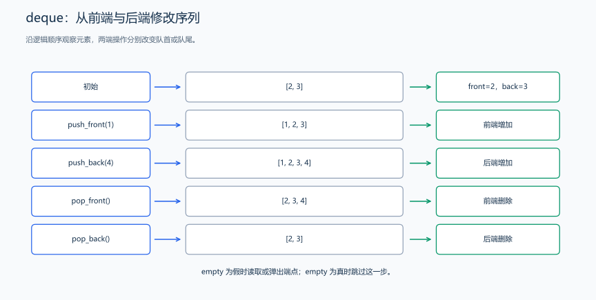
从 [2,3] 开始，先前插 1 得到 [1,2,3]，后插 4 得到 [1,2,3,4]，再前删、后删回到 [2,3]。push_front/back、pop_front/back 和 front/back 要分清“改变内容”与“只读取”，pop 与端点读取都要求非空。
两端插入会使旧迭代器失效，但已有元素的引用仍有效；中间插入会使全部旧迭代器、引用失效。pop_front 删除的不是最后一项时，只使被删项相关访问失效；删最后一项还使旧 end 失效。中间删除应重新获取访问位置，不能照搬 list 的规则。见 C++17 草案：deque.modifiers。
15.2 完整例题：滑动窗口最小值
题目原文（自拟）： 输入 1<=k<=n<=100000 和 n 个 int。对每个连续长度为 k 的窗口输出最小值，从最左窗口向右移动，每次一步，输出一行 n-k+1 个整数，以空格分隔。
先分析普通做法： 每个窗口重新扫 k 项，时间为 \(O(nk)\)。窗口右移后，最左旧项过期，右端新项加入，deque 可以同时在两端处理候选，但还需要知道哪些候选以后已不可能成为最小值。
为什么可以从后面删除候选？ 若较早下标 j 的值不小于刚到的值，新的值更小或相等，而且过期更晚。以后只要旧 j 仍在窗口，新的下标也在窗口，旧 j 就没有独有优势，可以删除。于是 deque 保存下标，按时间递增、对应值严格递增；前端便是当前最小值。保存下标才能判定过期，不能只存数值。
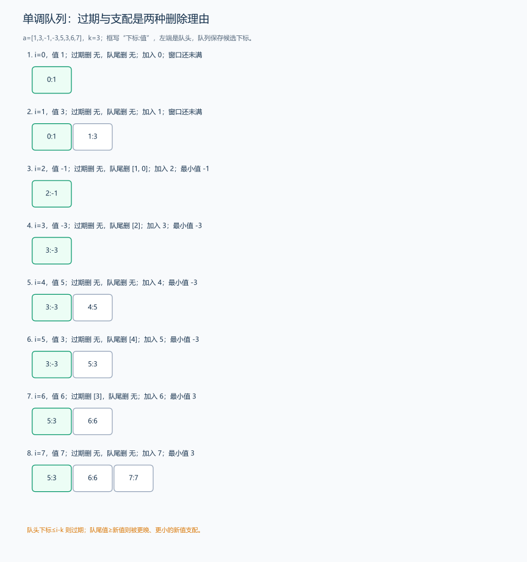
图中 k=3，读到下标 2 的 -1 时，队尾值 3、1 都被更小的新值取代；读到下标 5 的 3 时，队尾值 5 被取代，但前面的 -3 仍保留；到下标 6 时，-3 的下标 3 已离开 [4,6]，从前端弹出这个过期下标后，新的队首对应 3，它就是当前窗口的最小值。
#include <deque>
#include <iostream>
#include <vector>
using namespace std;
int main() {
int n, k;
cin >> n >> k;
vector<int> values(n);
for (int &value : values)
cin >> value;
deque<int> candidates; // 保存下标，队内值严格递增。
bool first = true;
for (int i = 0; i < n; ++i) {
while (!candidates.empty() && candidates.front() <= i - k) {
candidates.pop_front(); // 当前窗口左端是 i-k+1，旧下标过期。
}
while (!candidates.empty() && values[candidates.back()] >= values[i]) {
candidates.pop_back(); // 新值不大且过期更晚，旧候选没有优势。
}
candidates.push_back(i);
if (i >= k - 1) {
if (!first)
cout << ' ';
cout << values[candidates.front()]; // 当前最小值在前端。
first = false;
}
}
cout << '\n';
}输入：
8 3
1 3 -1 -3 5 3 6 7输出：
-1 -3 -3 -3 3 3每个下标只加入一次，删除后不会重新加入，虽然有两个 while，总处理次数仍为 \(O(n)\)。候选队列最多 k 项，占 \(O(k)\)，本程序另保存整个输入数组，占 \(O(n)\)。k=1 时每个元素自己就是答案；重复值保留更晚出现的下标，不改变最小值。若改求最大值，队尾淘汰条件改为旧值 <= 新值，维护递减队列。
练习题： 洛谷 P1886 — 单调队列 / 滑动窗口（同时输出最小值和最大值）；洛谷 P1440 — 求 m 区间内的最小值（窗口是当前项之前的若干项，输出时机与本例不同）。
16. array：定长数组
array<T,N> 位于 <array>，长度 N 写在类型中，适合大小编译时已知的序列。它连续存储，支持下标、at、迭代器、size 与 empty，也能使用 sort、fill、reverse。它没有 push_back、resize 或 reserve，复制时复制全部 N 项；大数组作局部变量还要考虑栈空间。
array<int,5> a{}; 的五项为 0；array<int,5> a; 中基本整数元素没有自动清零，不能在赋值前读取。需要运行时决定长度时用 vector，不能把输入的普通变量 n 直接写成标准 C++ 的 array<int,n>。
题目原文（自拟演示）： 程序无需输入。建立长度 5 的全零 array，将每项设为 7，再将下标 2 设为 3，只对下标半开区间 [1,4) 升序排序，输出全部元素。
分析： 花括号负责初始清零，fill 对所有已有元素赋值，最后的下标赋值只改变第三项；这些动作都不会改变长度。之后 begin()+1 指下标 1，end()-1 指下标 4；sort 处理两位置之间的 [1,4)，不动下标 0、4。array 的位置也支持随机跳转，因此可以直接复用算法库接口。
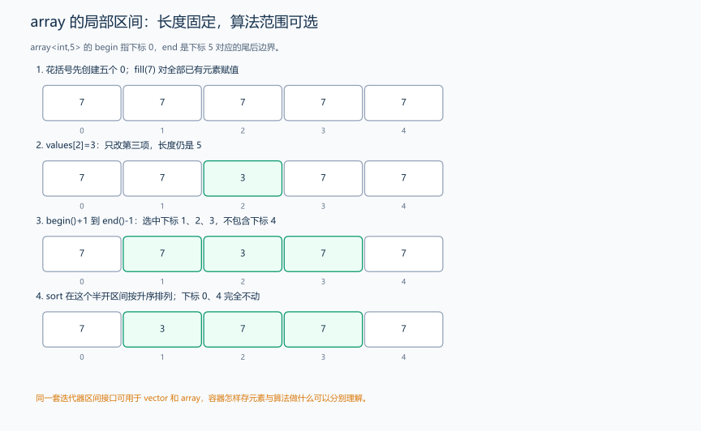
#include <algorithm>
#include <array>
#include <iostream>
using namespace std;
int main() {
array<int, 5> values{}; // 花括号使整数元素先初始化为 0。
values.fill(7); // 对五个已有位置赋值，不改变长度。
values[2] = 3;
sort(values.begin() + 1, values.end() - 1); // 只排序 [1,4)，两端保持 7。
for (int i = 0; i < static_cast<int>(values.size()); ++i) {
if (i > 0)
cout << ' ';
cout << values[i];
}
cout << '\n';
}输出：
7 3 7 7 7这里排序区间的三项由 [7,3,7] 变成 [3,7,7]，迭代器把“处理哪几项”交给算法。成员 fill(x) 填全部元素，算法库 fill(first,last,x) 也可只填选定区间。访问单项为 \(O(1)\)，填充、复制、完整遍历均为 \(O(N)\)；本例加上排序总时间为 \(O(N+k\log(k+1))\)，k 是选中区间长度。空的 array<T,0> 允许存在，但不能读取首尾。
练习题： 洛谷 P1428 — 小鱼比可爱（可按题面最大规模准备固定数组，再用实际 n 控制遍历）。
17. multiset 与 multimap：保存重复键
17.1 重复是多个独立元素
multiset<T> 与 set 都位于 <set>，multimap<Key,Value> 与 map 都位于 <map>。它们按比较器有序，但允许多个等价键；重复项仍各占一个元素，size 包含全部记录。multimap 没有下标运算符：同一个键可能对应多个值，不能用 mp[key] 唯一确定其中一个。
count(key) 返回等价项数量，费用为 \(O(\log n+c)\)，c 为匹配数；equal_range(key) 返回 [lower_bound(key),upper_bound(key))，用于遍历全部等价项。find 找到某个等价项或 end，不代表得到完整分组。
| 操作 | set / map | multiset / multimap |
|---|---|---|
insert |
返回 (位置,是否成功)，等价键不再插入 |
返回新项位置，等价键也插入 |
count(key) |
0 或 1 | 可能大于 1 |
erase(key) |
删除至多一项 | 删除全部等价项，\(O(\log n+c)\) |
erase(it) |
删除指定一项 | 仍只删除该一项，均摊常数 |
| 下标访问 | map 有，set 没有 | 两者都没有 |
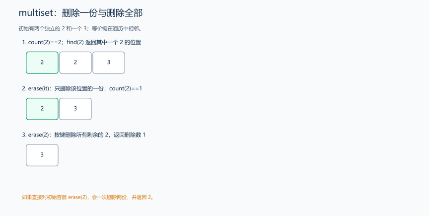
17.2 完整演示：重复删除与按键分组
题目原文（自拟）： 程序无需输入。multiset 初始保存 2、2、3，输出 2 的个数；删除找到的一项 2，再输出 2 的个数；随后按键删除所有 2，输出删除数量及剩余总量。multimap 插入 A→10、A→20、B→30，输出所有键 A 对应的值，保持它们的插入先后。
分析： 第一次 erase 传迭代器，只删一个 2；第二次 erase 传整数键，删剩下的全部 2。multimap 的等价键元素按插入次序排列，通过 equal_range 取出整个 A 分组，而不是只调用一次 find。
#include <iostream>
#include <map>
#include <set>
#include <string>
using namespace std;
int main() {
multiset<int> values{2, 2, 3};
cout << values.count(2) << '\n';
auto it = values.find(2);
if (it != values.end())
values.erase(it); // 只删这一项，不能 erase(end())。
cout << values.count(2) << '\n';
auto removed = values.erase(2); // 按键删除所有等价项。
cout << removed << ' ' << values.size() << '\n';
multimap<string, int> records;
records.emplace("A", 10);
records.emplace("A", 20);
records.emplace("B", 30);
auto [first, last] = records.equal_range("A");
bool separator = false;
for (auto position = first; position != last; ++position) {
if (separator)
cout << ' ';
cout << position->second; // 同键可以有多个独立值。
separator = true;
}
cout << '\n';
}输出：
2
1
1 1
10 20unordered_multiset、unordered_multimap 分别位于 <unordered_set>、<unordered_map>，也允许重复键，但无全局排序；要统计大量重复频次，映射到计数往往比保存每份重复记录更合适。不要为了“需要重复”一律选择 multi，先看是否要保留每项附加信息。
练习题： 洛谷 P2234 — 营业额统计（有序邻近查找）；洛谷 P2073 — 送花（按价格维护记录，重复价格如何处理以题面为准）。
18. forward_list：单向链表
forward_list<T> 位于 <forward_list>，是单向链表，只支持向前迭代，没有下标、back、push_back 或 size。它提供 before_begin() 表示第一个节点之前的位置，便于在头节点前插入或删除；该位置不能解引用。
insert_after(it,x) 在 it 后插入；erase_after(it) 删除 it 后的一项，返回后续位置。这与 list 的“在 it 前插入、删除 it 本身”不同。已知前驱时单项修改为 \(O(1)\)，找前驱仍需扫描。也有 sort、unique、remove 等成员操作，普通比赛代码更常用 vector 或 list，了解接口差异即可。
题目原文（自拟演示）： 程序无需输入。单向链表初始为 1、3，在头部插入 2，再删除 2 后面的一项，输出剩余序列。
分析： before_begin 位于首项之前，在它后面插入就得到 2、1、3。此时 begin 指向 2，erase_after(begin()) 删除的是下一项 1，结果为 2、3，不是删除 2 本身。
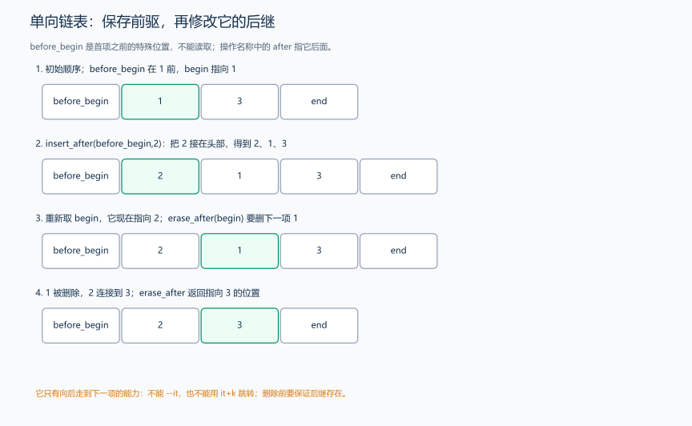
#include <forward_list>
#include <iostream>
using namespace std;
int main() {
forward_list<int> values{1, 3};
values.insert_after(values.before_begin(), 2); // 变为 [2,1,3]。
values.erase_after(values.begin()); // begin 指向 2，实际删除它后面的 1。
bool first = true;
for (int value : values) {
if (!first)
cout << ' ';
cout << value;
first = false;
}
cout << '\n';
}输出：
2 3单链表迭代器沿 next 向后走，所以只有 ++it。erase_after 删除前驱后面的那一项；图中先找到 20 的前驱 10，再由这个位置删除 20。频繁操作尾部时，可以保存尾部位置，或选择提供尾部接口的容器。
练习题： 洛谷 P1160 — 队列安排（需要左右插入时对比单、双向连接的差异，不能直接照搬本节的两次操作）。
19. 根据操作选择容器
19.1 操作需求与容器选择
| 需求 | 常见选择 | 判断依据 |
|---|---|---|
| 大小固定、编译时已知 | array | 固定长度，连续存储 |
| 按下标访问，主要尾部追加 | vector | 连续动态数组，尾插均摊常数 |
| 两端都频繁加入或移除 | deque | 两端常数操作，可随机访问 |
| 已知节点位置后频繁插入、删除、移动 | list | 不需搬移整个后缀；定位成本另计 |
| 只需后进先出 | stack | 只暴露栈顶接口，状态约束清楚 |
| 只需先进先出 | queue | 队头出、队尾入 |
| 动态取当前最优先项 | priority_queue | 不维护全序，只保证堆顶 |
| 动态有序去重、前驱后继 | set | 有序键，成员边界查找对数时间 |
| 有序键到值的映射 | map | 保存键值关系，可按键遍历 |
| 只需判重、查频次，不依赖键顺序 | unordered_set / unordered_map | 平均常数查找，最坏退化另计 |
| 相同键的多项都要分别保存 | multi 版本 | 明确重复项的删除与分组语义 |
静态数据一次排序、多次二分查询，通常 vector 就足够；反复向有序序列中间插入则要计入移动费用。set 不提供高效的第 k 小接口，priority_queue 不支持任意定位删除，unordered 容器不提供有序边界，不能因一个接口方便就假设其他操作也很快。
19.2 学完各容器后对照迭代器能力
| 所属容器 | 可以做什么 | 不支持什么 |
|---|---|---|
| vector、string、deque、array | ++it、--it、it+k、合法同序列位置相减 |
越过合法边界再读元素 |
| list、set、map 及其 multi 版本 | 前后逐项移动；next(it,k) 需走 k 步 |
it+k、it2-it1、通用 sort |
| forward_list、unordered 容器 | 向前逐项移动 | --it、随机跳转；unordered 不提供有序边界查找 |
| stack、queue、priority_queue | 通过各自接口访问指定端 | 普通迭代器和下标遍历 |
distance(first,last) 对随机访问迭代器可直接相减，对其他迭代器一般要逐项移动。next、prev 位于 <iterator>；它们不会让链表突然获得 \(O(1)\) 的下标访问。
19.3 从元素与迭代器理解修改后的访问
- 访问是否存在： 下标小于 size；front、back、top、pop 前非空；find 结果与 end 比较；区间方向和开闭正确。
- 修改是否改变题意： 下标查询 map 是否意外插入；set 是否丢失本应保留的重复项；unordered 遍历是否被误当输入顺序；pair 的平局规则是否满足要求。
- 旧位置是否还能用： vector 扩容和后缀移动、deque 两端或中间修改、哈希 rehash 各有失效规则；使用 erase 返回值继续遍历，不能继续读被删项。
clear() 后元素不存在，即使容量还在也不能按旧下标访问。size 为无符号类型，空容器上的 size()-1 会先下溢；倒序遍历可以用反向迭代器，或在范围已知可放进 int 时先转为有符号下标。竞赛宏把 int 改成 long long 后，元素存储也会变宽，应按实际类型与容量估算内存。
这些规则的容器类型区分见 C++17 草案：关联容器要求。学习时先独立运行各节的小例题，再把容器与后面的搜索、二分、贪心和图算法结合起来。
20. <numeric>：填值、求和与求公约数
已经能遍历数组，每次写“从起点依次加一”和“把所有元素相加”仍会重复。<numeric> 提供这些常用操作，可以用已经认识的迭代器区间调用。
| 接口 | 参数含义 | 返回值或效果 |
|---|---|---|
iota(first,last,start) |
对已有的半开区间从 start 连续赋值 | 不创建元素，依次写 start、start+1… |
accumulate(first,last,initial) |
从 initial 开始累计 | 初值的类型决定累计类型；求整数总和常用 0LL |
gcd(a,b) |
两个整数 | 最大公约数，gcd(0,0) 为 0 |
lcm(a,b) |
两个整数 | 最小公倍数，任一参数为 0 时结果为 0 |
题目原文（自拟）： 程序无需输入。建立四项整数数组，连续填为 1、2、3、4；第一行输出全部元素，第二行输出总和、12 与 18 的最大公约数和最小公倍数，以空格分隔。
#include <iostream>
#include <numeric>
#include <vector>
using namespace std;
int main() {
vector<int> values(4); // 先建立已有区间，iota 不会增长长度。
iota(values.begin(), values.end(), 1); // 依次填入 1、2、3、4。
for (int i = 0; i < 4; ++i) {
if (i > 0)
cout << ' ';
cout << values[i];
}
cout << '\n';
long long total = accumulate(values.begin(), values.end(), 0LL); // 按 long long 累计。
cout << total << ' ' << gcd(12, 18) << ' ' << lcm(12, 18) << '\n';
}输出：
1 2 3 4
10 6 36填值、求和各遍历一次，共 \(O(n)\) 时间。gcd、lcm 从 C++17 起提供，分别返回最大公约数与最小公倍数；结果类型由传入的整数类型决定。数论章节会通过辗转相除继续推导公约数算法。
练习题： 洛谷 P1029 — 最大公约数和最小公倍数问题（先检查给定两数能否形成所需关系，再枚举符合条件的数对；可在数论章节学完后回做）。
21. tuple：多字段记录
pair 能保存两个字段。若一条记录要同时保存行、列和代价，可以用 <tuple> 的 tuple<int,int,long long>；各类型按字段顺序列在尖括号里。
题目原文（自拟）： 程序无需输入。保存记录 (2,3,5)，先输出全部字段；再通过结构化绑定得到副本，把副本中的行改成 9，输出副本。原记录不能改变。
#include <iostream>
#include <tuple>
using namespace std;
int main() {
tuple<int, int, long long> record{2, 3, 5}; // 三个类型分别对应三个字段。
cout << get<0>(record) << ' ' << get<1>(record) << ' ' << get<2>(record) << '\n';
auto [row, column, cost] = record; // 值绑定得到副本。
row = 9;
cout << row << ' ' << column << ' ' << cost << '\n';
}输出为 2 3 5、9 3 5，各占一行。get<0>(record) 是函数模板调用：0 是编译期字段编号，从 0 开始，不是运行时下标运算。要修改原记录可用 get<0>(record)=9 或引用绑定；成员名较多且有明确含义时，自己定义 struct 通常更易读。
tuple 默认按字段依次进行字典序比较，与 pair 的思路相同。DP 的区间恢复和图论的边记录会用到它；遇到 auto [left,right,sum] 时，先核对返回 tuple 的字段排列。
22. <sstream>：从一行文本读取数据
有时题目一行包含若干整数，但没有告诉这一行有几个。先把整行读进 string，再像读取 cin 一样从这段文本里解析整数，可以把“行的边界”与“数值的读取”分开。
题目原文（自拟）： 输入一行，只含合法的整数和空白，允许空行；整数及累计总和都在 long long 范围内。输出这一行整数的总和，空行输出 0。
#include <iostream>
#include <sstream>
#include <string>
using namespace std;
int main() {
string line;
getline(cin, line); // 首次读取就是整行，没有前一次数字输入残留的换行。
istringstream input(line); // <sstream> 把这段字符串作为输入来源。
long long value, total = 0;
while (input >> value)
total += value; // 读完整行或解析失败时停止。
cout << total << '\n';
}输入：
12 -5 7输出：
14istringstream 只读取已经保存的文本，不会越过这一行去取 cin 中下一行的数据。它仍遵守整数解析规则；若题面允许非法字符，要另外检查，不应把遇到非法字符后的部分误认为已经全部处理。